Presentation
In the realm of tabletop role-playing games, Eidos stands as a unique and innovative addition to the genre. Rooted in the principles of open source development, this game is designed to be both immersive and accessible, offering a deep and rich narrative experience that is driven by player choice. Eidos takes its name from the ancient Greek concept of the world of ideas, reflecting the game's focus on immersive and thought-provoking narratives. This name is a nod to the idea that in role-playing games, players have the ability to explore and interact with an imagined world filled with endless possibilities.
The character creation process in Eidos is a deep and engaging experience, allowing players to build their characters from the ground up. With character sheets devoted to personality, religion, physical description, background, clothing, equipment, and skills, players have the tools to create a truly unique and memorable character.
The combat system in Eidos is designed to be immersive and engaging, with mechanics that are designed to create dynamic and exciting combat scenes. The game's mechanics are based on classic combat narratives, and the system strives to be a simulation of combat rather than simply a turn-based dice-rolling game. The standard rules are designed to be played in a pre-modern low-fantasy setting, but the game is easily adaptable to other role-playing scenarios.
This rulebook is divided into six chapters, each of which covers a different aspect of the game. Chapter 1: Character Creation provides a detailed guide to creating your character, including sections on personality, religion, physical description, background, clothing, equipment, and skills. Chapter 2: Combat and Combat Resolution covers the mechanics of combat in Eidos, including basic combat mechanics, ability checks, skills, tactical maneuvering, environmental interaction, morale, reinforcements, ranged combat, unarmed combat, weapon mechanics, grappling, healing, shields and armor, mounted combat, naval combat, aerial combat, siege weapons, traps, stealth, mass combat, and death and dying.
Chapter 3: Survival Mechanics covers the mechanics of survival in Eidos, including food and water requirements, shelter, scavenging, travel, and exploration. Chapter 4: Character Injuries and Health provides a comprehensive guide to character injuries and health, including damage and wound mechanics, healing and recovery, status effects, and advanced injuries and trauma.
Chapter 5: Game Master Tools provides a guide to running Eidos games, including world-building, NPC generation, encounters, group dynamics, movement and travel, encounter generation, and campaign management. Chapter 6: Optional Rules and Variants covers alternative systems for combat, magic, and skills, as well as advanced mechanics for character development and progression and rules for playing in different settings and genres.
In conclusion, Eidos is an open source tabletop RPG system that offers a unique and engaging narrative experience, with mechanics that are designed to create immersive and exciting combat scenes. With its deep character creation process, engaging combat mechanics, and comprehensive survival mechanics, Eidos is a game that offers endless possibilities for players to explore and experience.
Personality

Most of this part will be based in the Ash’s Guide to RPG Personality & Background. Of course it its not a carbon copie, some modifications will be needed to fit his tables in the system. Anyway, credits must be given and you should check out his guide.
Primary Motivators
The first step in crafting a character's personality is selecting their primary and secondary motivators. These motivations serve as the driving force behind a character's actions and decisions, shaping the narrative of their journey. The primary motivator is particularly important, as it acts as the primary catalyst for a character's backstory and personality. It is the underlying theme of a character's motivations, guiding their behavior and propelling them forward.
When choosing these motivations, it's important to consider what your character wants most in the world. Is it wealth, power, love, revenge, or something else? By focusing on these motivations, players can ensure that their character's actions feel authentic and grounded in their personal desires. Whether facing challenges in combat or navigating complex social situations, characters driven by strong motivators will always have a clear direction and purpose.
| No. | Theme | Description |
|---|---|---|
| 1 | Achievement | To overcome obstacles and succeed; to become the best |
| 2 | Acquisition | To obtain possessions/wealth |
| 3 | Adoration | To be cherished, admired, and wanted by others |
| 4 | Balance/Peace | To bring all things into harmony and equilibrium |
| 5 | Beneficence | To protect the helpless, heal the sick, feed the hungry, etc. |
| 6 | Chaos | To disrupt, to cause confusion and discord |
| 7 | Competition | To seek out or create rule-based win/lose scenarios; to defeat others in contests |
| 8 | Conflict | To seek out or create rivalry, fighting, or animosity |
| 9 | Conquest | To conquer other peoples, to bring them into one’s own culture/rule |
| 10 | Corruption | To despoil, ruin, humiliate, or make depraved |
| 11 | Creation | To build or make new, such as art, culture, invention, design, etc. |
| 12 | Destruction | To annihilate, exterminate, and unmake |
| 13 | Discovery/Adventure | To explore, uncover mysteries, and pioneer |
| 14 | Domesticity | To get married, have children, and live a family life |
| 15 | Education | To provide information, teach, enlighten, or train |
| 16 | Entertainment | To entertain, amuse, and delight others |
| 17 | Enslavement | To force others into servitude |
| 18 | Hedonism | To enjoy all things sensuous |
| 19 | Heroism | To find valor and honor through battle or self-sacrifice |
| 20 | Liberation | To free the self and/or others from perceived captivity or enslavement |
| 21 | Love | To experience/share affection and emotional commitment, romantic or platonic |
| 22 | Nobility/Honor | To exalt ideals such as generosity, honesty, bravery, and courtliness |
| 23 | Order | To arrange, organize, and reduce chaos |
| 24 | Play | To have fun, to enjoy life |
| 25 | Power | To control and lead others |
| 26 | Proselytization | To spread a belief system; indoctrinate others |
| 27 | Purity | To achieve a state of moral or spiritual perfection, of self and/or others |
| 28 | Rebellion | To fight against power structures; to undermine authority |
| 29 | Recognition | To gain approval, social status, or fame |
| 30 | Service | To follow a person, government, order, religion, etc. |
| 31 | Torment | To inflict pain and suffering, on others and/or the self |
| 32 | Understanding | To seek knowledge or wisdom (spiritual, scientific, magical, etc) |
| 33 | Vice | To enable or engage in self-destructive behavior |

Dispositions
Disposition is an important aspect of character creation that provides depth and dimension to your character's personality. It allows you to understand how your character is likely to react emotionally to different situations, as well as how they appear to others. This trait helps you create a believable and relatable character, giving them an emotional landscape that makes sense within the context of the story.
When determining your character's emotional disposition, it is important to keep in mind that it is not necessarily limiting. It simply provides a baseline for how your character is likely to feel at any given moment. A character with a predominantly cheerful disposition may still experience moments of sadness, anger, or anxiety, but they will be more likely to return to their cheerful state after those moments have passed.
It is also important to note that emotional disposition should not be equated with alignment. A character's disposition can exist independently of their moral or ethical alignment, and it is possible for a character to be joyfully evil or angrily good. Understanding your character's disposition will help you make decisions about their emotional reactions, but it is just one aspect of the complex and multifaceted personality that you are creating.
- Joyful
- Anxious
- Melancholy
- Curious
- Calm
- Angry
- Contemptuous
- Excited
- Apathetic
- Ashamed
Moodiness
Moodiness is an important aspect of a character's personality and can greatly impact their behavior in different situations. A character who is labile, or quick to experience intense emotions, is likely to react strongly to the events happening around them. This can make them appear impulsive and prone to outbursts, but it can also add a level of excitement and unpredictability to their actions. On the other hand, a phlegmatic character, who is psychologically consistent and moderate, is likely to maintain their composure in even the most trying of situations. This calm demeanor can give them a sense of stability and reliability, but it can also make them appear uninterested or indifferent to the world around them.
It is important to note that both moodiness traits have their own strengths and weaknesses, and they can greatly impact a character's relationships with other characters. For example, a labile character may be prone to jealousy or resentment, while a phlegmatic character may struggle with expressing their emotions effectively. Choosing the right moodiness trait for your character can help you build a more complete and well-rounded personality.
Ultimately, the key to making a character's moodiness work for them is understanding the underlying motivations and dispositions that drive their behavior. Whether your character is quick to experience intense emotions or stays calm and collected in the face of adversity, the key is to make sure that their moodiness feels true to who they are as a character. By incorporating moodiness into your character's personality, you can add depth and richness to your role-playing experience and help bring your character to life on the tabletop.
- Labile
- Even-tempered
- Phlegmatic

Outlook
The concept of outlook is an important aspect of character creation as it defines the basic worldview of a character and helps determine their overall view of the world around them. This trait can greatly influence the choices that a character makes and the way they interact with others. A character with a positive outlook is likely to see the good in people and situations, while a character with a negative outlook is likely to be more skeptical and pessimistic. Understanding a character's outlook is key to understanding their motivations and how they may react in different situations. It is important to note that a character's outlook does not dictate their alignment, as a character can have a positive outlook but still make morally questionable decisions. This trait helps to add depth and complexity to a character, making them feel more real and unique.
| Outlook | Description |
|---|---|
| Optimistic | Idealistic, confident, trusting, hopeful, upbeat |
| Pessimistic | Cynical, bleak, distrustful, foreboding, resigned |
Integrity
Integrity refers to the values that guide a character's behavior in work and social interactions. When creating a character, players can choose between two options that embody different qualities and tendencies. The first option is "Conscientious", which represents being industrious, honest, responsible, meticulous, and pragmatic. On the other hand, the second option is "Unscrupulous", which embodies being lazy, deceitful, unreliable, manipulative, slipshod, and impractical. These two options serve as a starting point for players to develop their character's personality and decision-making. The choice of integrity will play a crucial role in determining a character's motivations and actions, influencing the character's interactions with others and the events of the story.
| Integrity | Description |
|---|---|
| Conscientious | Industrious, honest, responsible, meticulous, pragmatic |
| Unscrupulous | Lazy, deceitful, unreliable, manipulative, slipshod, impractical |

Impulsiveness
The next aspect of character creation to consider is impulsiveness. This trait refers to a character's ability to regulate their thoughts and actions. Players must choose between two options: controlled or spontaneous. A controlled character is deliberate, focused, steady, and thoughtful. They carefully consider their decisions and think before they act. On the other hand, a spontaneous character is capricious, flighty, hyperactive, and rash. They are quick to act without thinking through the consequences of their actions. It's important to consider impulsiveness as it can greatly impact the way a character approaches situations and reacts to stimuli. A controlled character may be more reliable and level-headed, while a spontaneous character may be more unpredictable and exciting. Ultimately, the choice of impulsiveness helps to round out a character's personality and inform their behavior.
| Impulsiveness | Description |
|---|---|
| Controlled | Deliberate, focused, steady, thoughtful |
| Spontaneous | Capricious, flighty, hyperactive, rash |
Boldness
When it comes to creating a character's personality, it is important to consider their boldness, or willingness to face danger and enter into battle. This trait can greatly impact how a character approaches conflict and adversity, and can inform their actions and decisions in high-pressure situations. There are two main options for this characteristic: intrepid and cautious.
Intrepid characters are daring, reckless, and valorous. They have a confident demeanor and are not easily intimidated by danger. They are known for their bravery and audacity in the face of adversity, and are often seen as leaders in combat situations. On the other hand, cautious characters are timid, paranoid, and vigilant. They are nervous and tentative in the face of danger, preferring to assess the situation before making a move. They are not as quick to jump into action, but their carefulness can often lead to a more strategic approach to conflict.
| Boldness | Description |
|---|---|
| Intrepid | Daring, reckless, valorous, dauntless, audacious, confident |
| Cautious | Timid, paranoid, vigilant, nervous, tentative |

Agreeableness
The sub-topic of "Agreeableness" deals with a character's overall attitude towards others and their ability to handle interpersonal conflicts and new situations. This trait is particularly important in shaping a character's behavior in social interactions and their ability to navigate challenging circumstances. A character who is described as "Agreeable" is warm, empathetic, and open-minded, possessing qualities such as tolerance, forgiveness, and adaptability. On the other hand, a character who is described as "Disagreeable" is cold and rigid, possessing traits such as tension, intractability, and narrow-mindedness. Understanding a character's level of agreeableness can give insight into how they are likely to respond in social and interpersonal situations.
| Agreeableness | Description |
|---|---|
| Agreeable | Warm, empathic, tolerant, forgiving, open-minded, adaptable, altruistic |
| Disagreeable | Cold, rigid, tense, intractable, narrow-minded, cantankerous, stingy |
Interactivity
The next sub-topic in character creation is Interactivity, which deals with the way your character interacts with others. This aspect of personality is crucial in shaping the character's social relationships and determining how they engage with the world around them. The table of choices in Interactivity includes two options: Engaging and Reserved. An Engaging character is often talkative, candid, and touchy, while a Reserved character is usually shy, preferring to keep to themselves and be more reserved in their interactions. Understanding this aspect of your character will greatly enhance the depth of your role-playing experience and allow you to build compelling, engaging stories.
| Interactivity | Description |
|---|---|
| Engaging | Talkative, candid, entertaining, touchy |
| Reserved | Shy, loner, taciturn, evasive, cryptic |
Conformity
Conformity is an important aspect of a character's personality, determining their relationship with cultural norms and societal expectations. A character who is conventional is likely to follow orthodox beliefs and practices, be formal in their demeanor, and adhere to mainstream customs. On the other hand, a character who is heterodox may be rebellious in nature, have a creative and artistic streak, and may be known for their freethinking and exotic choices. Understanding a character's conformity can give insight into how they view and interact with the world around them.
| Conformity | Description |
|---|---|
| Conventional | Orthodox, formal, down-to-earth, mainstream, traditional |
| Heterodox | Rebellious, arty, shocking, freethinking, exotic |
Quirks, Habits, and Oddities
To help bring your character to life and add depth to gameplay, consider incorporating small quirks, habits, and oddities into their personality. These unique behavioral characteristics can range from relatively harmless habits, such as humming or lip biting, to more engaging and potentially entertaining quirks such as exhibitionism or sleepwalking. By adding these small but meaningful details to your character, you can bring them to life in a way that sets them apart from the rest of the party.
These quirks, habits, and oddities can offer a multitude of role-playing opportunities. They can help flesh out a character's backstory, provide unique challenges or benefits during gameplay, and even influence the way they interact with other characters. For example, a character who is a compulsive liar may struggle with building trust with others, while a character who is an animal hater may have trouble working with characters who have animal companions. Whether you choose to focus on the more harmless or more engaging quirks, incorporating these small behaviors into your character can greatly enhance your role-playing experience.
| 1. Humming | 31. Snoring | 61. Clearing throat repeatedly |
| 2. Dancing | 32. Walking backwards | 62. Covering mouth while speaking |
| 3. Sleepwalking | 33. Teeth sucking | 63. Fidgeting with hands |
| 4. Facial tics | 34. Excessively touching others | 64. Whispering to self |
| 5. Exhibitionism | 35. Substance use (non-addicted) | 65. Nervous nail biting |
| 6. Fingernail biting | 36. Animal hater | 66. Licking/smacking lips |
| 7. Eavesdropping | 37. Insomnia | 67. Staring blankly |
| 8. Daydreaming | 38. Beard/hair stroking | 68. Chewing gum |
| 9. Talking in sleep | 39. Nose picking | 69. Sighing heavily |
| 10. Stuttering | 40. Needless apologizing | 70. Breathing heavily |
| 11. Compulsive lying | 41. Exaggeration | 71. Scratching self |
| 12. Whistling | 42. Superstitious (omens, luck, etc.) | 72. Clicking pen/tapping fingers |
| 13. Name dropping | 43. Belching | 73. Swallowing hard |
| 14. Self-inflict pain/injury | 44. Sleeping in odd places | 74. Clearing throat loudly |
| 15. Mumbling | 45. Repeating others | 75. Tapping feet |
| 16. Constant grooming | 46. Smelling things | 76. Fidgeting with clothing |
| 17. Foot tapping | 47. Teeth picking | 77. Avoiding eye contact |
| 18. Lip biting/licking | 48. Stealing | 78. Glancing around nervously |
| 19. Coin flipping | 49. Tree climbing | 79. Talking too fast/slow |
| 20. Chewing (e.g. sticks, small bones) | 50. Excessive sweating | 80. Stuttering words |
| 21. Knuckle cracking | 51. Nervous laughter | 81. Twitching facial muscles |
| 22. Collects odd things | 52. Touching/tugging earlobes | 82. Rubbing hands together |
| 23. Singing | 53. Twirling hair/beard | 83. Biting cheek/tongue |
| 24. Snacking (nuts, seeds, etc.) | 54. Playing with objects | 84. Staring off into space |
| 25. Reciting poetry | 55. Biting tongue/lips | 85. Nodding/shaking head excessively |
| 26. Constant eating | 56. Nail tapping | 86. Interrupting others |
| 27. Pacing | 57. Constant yawning | 87. Leaning in too close |
| 28. Blade sharpening | 58. Blinking excessively | 88. Speaking loudly |
| 29. Counting | 59. Bouncing legs | 89. Repeating words/phrases |
| 30. Hair pulling | 60. Skipping/hopping | 90. Rocking back and forth. |

Sense of Humor
Sense of Humor is an important aspect of a character's personality and can be used to show their humor preferences and how they might react in different situations. It ranges from crude humor to dry wit and includes various styles such as slapstick, jokey, cynical, prankster, mean-spirited, gleeful, and surreal. By selecting one of these options, you can help to define your character's sense of humor and how they might react in different situations. Having a strong sense of humor can also be a way for your character to diffuse tense situations, and can be used to show their lighter side. Ultimately, your character's sense of humor is a tool that you can use to further develop their personality and bring them to life in your storytelling.
- Crude
- Dry
- Slapstick
- Jokey
- Cynical
- Prankster
- Mean-spirited
- Gleeful
- Surreal
Mental Disorders
In this RPG system, we aim to provide an accurate representation of human mental and emotional disorders. While we understand that not all players may want their character to struggle with such issues, it does present an opportunity for unique and interesting role-play. For this reason, we suggest that players consider assigning these disorders to non-player characters, adding depth and complexity to the game world. It's important to note that the list provided is not exhaustive and only offers brief descriptions. Nevertheless, these disorders can also serve as inspiration for creating realistic and terrifying curses or divine punishments.
Addiction
- Chronic, compulsive drug/activity indulgence, despite harmful consequences. Can decide if it is mild, moderate, or severe.
Amnesia
- Severe memory loss; can be loss before a certain point (retrograde) or after (anterograde).
Bipolar Disorder
- Erratic swings from periods of mania to major depression.
PTSD
- Anxiety disorder developed after exposure to a terrifying event or ordeal resulting in potential re-experiencing of the ordeal, nightmares, hypervigilance, trouble sleeping, being easily startled, and avoidance of anything that is a reminder of the event.
Major Depression
- Impaired physical functions (e.g., sleep, appetite); loss of interest and pleasure; low energy & motivation; possibly accompanied by severe pessimism, hopelessness, guilt, and suicidal thoughts/intent.
Fugue
- Abrupt travel away from home, an inability to remember important aspects of one’s life, and the partial or complete adoption of a new identity.
Hypochondria
- Preoccupation with fears of having a serious disease or physical problem based on little or no real evidence.
Schizophrenia
- Delusions (unreal beliefs, e.g., savior complex or assigning unusual significance or meaning to normal events); hallucinations (unreal sensations, usually auditory, i.e., “voices”); disorganized speech; grossly disorganized or catatonic behavior; paranoia.
OCD
- Obsessive-Compulsive Disorder described the existence of both regular compulsions (overwhelming need to engage in a ritualized behavior) and obsessions (persistent, often irrational, and seemingly uncontrollable thoughts).
Phobia
- Extreme anxiety and fear associated with an object or situation. Can include anything, for instance: specific monsters/animals, fire/water, heights, magic, open/enclosed spaces, heights, or darkness.
Agoraphobia
- Fear of being in a situation where escape is difficult or where help might not be available in the event of a panic attack or other medical emergency.
Social Anxiety Disorder
- Extreme fear of embarrassment or criticism in social situations.
Body Dysmorphic Disorder
- Preoccupation with an imagined or minor defect in one’s appearance.
Generalized Anxiety Disorder
- Chronic, excessive worry about multiple life events and activities.
Obsessive Love Disorder
- Intrusive thoughts about an individual and an overwhelming need to be with them.
Delusional Disorder
- A condition in which an individual experiences non-bizarre delusions, meaning the delusions are not implausible and could happen in reality.
Adjustment Disorder
- Disturbance caused by a specific stressful life event, such as a loss, change in lifestyle, or change in health status.
Narcissistic Personality Disorder
- Excessive self-love, entitlement, and a lack of empathy for others.
Borderline Personality Disorder
- A pattern of instability in relationships, moods, self-image, and behavior.
Antisocial Personality Disorder
- A disregard for laws and the rights of others.
Anxiety Disorder
- A general term for excessive fear or worry about everyday events and activities.
Dissociative Identity Disorder
- A pattern of unstable emotions, relationships, and sense of self.
Histrionic Personality Disorder
- A condition in which a person's sense of identity is fragmented and they experience two or more distinct and alternating personalities.
Obsessive-Compulsive Personality Disorder
- A pattern of excessive emotionality and attention-seeking behavior.
Paranoia
- A pattern of preoccupation with orderliness, perfectionism, and control.
Psychotic Disorder
- A pattern of grandiosity, need for admiration, and lack of empathy.
Eating Disorder
- An unreasonable distrust or suspicion of others, often accompanied by delusions.
Trichotillomania
- A group of mental illnesses characterized by distorted thinking, perceptions, emotions, and behaviors.
Topics of Conversation
One helpful way to bring depth to your character is to determine what they like to talk about in casual social situations. People are naturally inclined to talk about things they are skilled in or have a personal interest in, and this is an easy way to help flesh out your character. By examining your character's skills, hobbies, training, and background, you can start to determine what topics they might be passionate about. This information can be used to create a more complete picture of who your character is and how they interact with others in social situations. By giving your character a few key topics they like to discuss, you can help bring them to life and make them more memorable to other players.
Conclusion
In conclusion, the character's personality is a crucial aspect in role-playing games and helps to bring the character to life. This chapter has covered a range of fields that allow players to flesh out their characters, including alignment, morality, values, beliefs, religion and spirituality, and quirks. These fields provide a comprehensive and nuanced view of the character's personality, allowing players to bring depth and dimension to their characters. By taking the time to fill out these fields, players can create truly unique and engaging characters that will bring their stories to life. Whether playing a heroic warrior or a cunning rogue, these fields help players to truly embody their characters and bring the world of the game to life.
Spirituality and Religion
In the world of role-playing games, it's important to consider the spirituality and religious beliefs of a character. The Spirituality Sheet is an integral part of character creation and is designed to help players define their character's connection to the spiritual and religious aspects of the game world. This chapter will detail the mechanics behind the Spirituality Sheet, including the options available for defining the strength of a character's belief or association with a religious system, as well as any relevant traits and skills that may impact the character's spirituality and religious beliefs. Whether playing as a devout follower of a particular faith or a non-believer, the Spirituality Sheet will help players bring their character to life and create a more immersive role-playing experience.
Adherence
The "Adherence" field on the character sheet represents the strength of the character's belief or association with a particular religious or spiritual system. The options for this field range from non-believer to orthodox adherent, providing a spectrum of beliefs that a character can possess. The non-believer is someone who does not hold any belief in a higher power, whereas an agnostic is someone who is uncertain about the existence of a higher power. On the other hand, a casual adherent is someone who holds a loose connection to their religious or spiritual beliefs, and an orthodox adherent is someone who strictly follows the teachings and practices of their chosen system. This mechanic helps to further flesh out the character and their motivations, and provides a lens through which the character may view the world around them.
- Non-believer
- Agnostic
- Casual adherent
- Orthodox adherent
Tolerance
This field reflects the character's willingness to accept differences of belief in others. In determining the level of tolerance, there are three options available for the player to choose from: Inclusive, Tolerant, or Intolerant. The level of tolerance selected will affect how the character interacts with people of different beliefs and religions in the game world.
- Inclusive
- Tolerant
- Intolerant

Religious Demeanor
The field "RELIGIOUS DEMEANOR" on the character sheet aims to capture how your character tends to act in regards to religious beliefs. To reflect this, the player will be presented with three different fields to fill out. The first field is "Expression of beliefs" and asks the player to decide on the frequency at which their character expresses their beliefs. The options range from "None", "Occasional", to "Constant". The next field is "Converting others", which asks the player to choose the level of effort the character puts into converting others to their beliefs. The choices here are "Never", "Casual", and "Aggressive". Finally, the "Attitude" field asks the player to choose the general approach the character takes towards religion and religious beliefs. The options for this field range from the irreverent "Irreverent" to the devout "Ecstatic". By filling out these fields, the player can gain a deeper understanding of their character's relationship to religion and spirituality.
| Expression of beliefs | Converting others | Attitude |
|---|---|---|
| - None | - Never | - Irreverent |
| - Occasional | - Casual | - Fearful |
| - Constant | - Aggressive | - Judgmental |
| - Humble | ||
| - Ecstatic |
Religious association
The "Religious Association" field in the character sheet is an important aspect of a character's spirituality. This field indicates the character's affiliation, or lack thereof, with a religious organization or belief system. There are a range of options available, including Church, Cult, Fellowship, Solitary, and Indigenous, each with its own unique meaning and characteristics.
A Church is a well-established, hierarchical religious organization, typically with a set of beliefs and practices that are followed by its members. A Cult is a smaller group attached to a single charismatic leader, who may have unique or unconventional beliefs. A Fellowship is a small, informal religious group that lacks formal organization and a charismatic leader. Solitary is for characters who either have unique beliefs or choose not to affiliate with others, and Indigenous refers to religious traditions within a cultural group, such as a family or village.
Having an understanding of a character's religious association can provide insight into their beliefs, values, and motivations, and can also add depth to their relationships with other characters. This field can also play a role in the story, as it may impact the character's actions and decisions, as well as influence how they are perceived by others.
| Term | Definition |
|---|---|
| Church | A large, established, and hierarchical religious organization with a set of doctrines and practices. |
| Cult | A small or large group with a strong devotion to a single charismatic leader, often with unconventional beliefs and practices. |
| Fellowship | A small group of like-minded individuals who gather for religious purposes, but lack formal organization and a charismatic leader. |
| Solitary | A character who holds unique beliefs or has chosen not to affiliate with any religious group. |
| Indigenous | Religious traditions within a cultural group, such as a family, village, or tribe, with a strong connection to their cultural identity. |
| Sect | A subgroup within a larger religious organization that holds distinct beliefs and practices. |
| Coven | A group of individuals who practice witchcraft, often with elements of nature worship and animism. |
| Temple | A place of worship associated with a specific religion or spiritual tradition. |
| Monastery | A religious community, often associated with a specific order or denomination, known for their dedication to a life of contemplation and devotion. |
| Mystic Order | A secret society or organization dedicated to the study and practice of spiritual and esoteric knowledge. |

Religious Roles
The "Religious Roles" field represents the various positions and titles within a fictional religious organization or belief system. These roles range from leaders and spiritual advisors, to assistants and messengers, to protectors and mediators. Each role comes with its own set of responsibilities and privileges, reflecting the unique aspects and beliefs of the religion it represents. Some religious roles may be highly respected and hold significant power within the community, while others may be more solitary or focused on specific tasks. This field is important for creating well-rounded and diverse religious systems within the game world, and for providing players with the opportunity to explore different aspects of spirituality and faith. Whether a player chooses to play a charismatic leader or a solitary mystic, the "Religious Roles" field offers a wealth of opportunities for role-playing and character development.
| Role | Description |
|---|---|
| Abbot/Abbess | The leader of a monastery or convent. |
| Archbishop | A bishop who oversees multiple dioceses. |
| Acolyte | An assistant or beginner in religious service. |
| Bishop | An overseer of a specific area or diocese within a church. |
| Chaplain | A spiritual advisor in a specific setting, such as a hospital or military unit. |
| Cult Leader | Usually a charismatic head of a small group of highly devoted followers. |
| Disciple | A dedicated follower of a religious teacher or leader. |
| Elder | An experienced and respected member of a religious community. |
| Evangelist | A religious figure who spreads the gospel or message of their faith to others. |
| Guru | A spiritual teacher. |
| Inquisitor | An official tasked with finding and "correcting" people who have broken religious rules. |
| Martyr | A person who dies for their religious beliefs. |
| Missionary | Dedicated to converting others, usually in distant geographic areas. |
| Monk/Nun | Belongs to a monastery or convent. |
| Mystic | A person who has direct experience of ultimate reality through spiritual or mystical practices. |
| Patriarch/Matriarch | The leader of an organized religion. |
| Pilgrim | One traveling to a holy site or landmark. |
| Priest/Priestess | Someone authorized to administer sacraments as an ordained member of a church. |
| Prophet | One inspired to utter revelations or predictions, often in service to a deity. |
| Reverend | An honorific title given to a religious figure. |
| Sacred Courtesan | Has sex, often with strangers, in service to a religion and for a symbolic price. |
| Mediator | A person who helps resolve conflicts and bring people together through spiritual means. |
| Seeker | One who is searching for spiritual knowledge and understanding. |
| Temple Guardian | A protector of a religious site, such as a temple or shrine. |
| Wandering Monk | A roving spiritual teacher who travels from place to place, spreading religious teachings. |
| Witch | A practitioner of magic who uses their powers for spiritual purposes. |
| Healer | A person skilled in the use of herbs, prayers, or other methods to cure illnesses and injuries. |
| Oracle | A person or entity that provides insight or prophesies into the future or hidden knowledge. |
| Seer | A person who has the ability to see and understand things that others cannot, often through spiritual means. |
| Divine Herald | A messenger of the gods, responsible for delivering messages and performing sacred duties. |
| Sanctuary Keeper | The caretaker of a sacred place, responsible for maintaining its sanctity and protecting it. |
| Temple Guardian | A protector of a religious site, such as a temple or shrine. |
| Shrine Maiden | A female spiritual attendant, responsible for maintaining the purity and sanctity of a shrine. |
| Ritualist | A person skilled in the performance of religious rituals and ceremonies. |
| Visionary | A person who receives and interprets divine visions and messages. |
| Soothsayer | A person who predicts future events based on astrology, dreams, or other forms of divination. |
| Holy Knight | A warrior who serves a religious cause and protects the faithful. |
| Chant Master | A person who leads religious music and song, often in a religious setting. |
| Deacon | A clergy member responsible for serving the needs of a congregation. |
| Minister | A religious leader who serves a specific denomination or congregation. |
| Deity | A supernatural being worshipped as having power over the world and human affairs. |
| Saint | A person recognized as holy or virtuous by a particular religion. |
| Apostle | A messenger or disciple of a religious teacher or leader. |
| Recluse | One who lives in solitude for spiritual or religious reasons. |
| Necromancer | A person who communicates with the dead for the purpose of gaining knowledge or guidance. |
Practices/Rituals:
The "Practices/Rituals" field is an important aspect of a character's spiritual profile, as it allows players to flesh out their character's religious beliefs and observances. This field covers the specific rituals or practices that the character engages in, such as daily prayers or meditations, monthly celebrations or ceremonies, seasonal rituals, or life milestones. In addition to the type of ritual, this field may also include information on the frequency, location, and details of the ritual itself. For example, a character might participate in a monthly full moon ritual that involves offering incense, reciting prayers, and communing with their deity or spirit guide. By including this information, players can help to create a more vivid and immersive representation of their character's spirituality. Additionally, this information can also be used to drive roleplaying decisions, such as the character's reactions to certain situations or interactions with others. Overall, the "Practices/Rituals" field is a valuable tool for creating well-rounded, believable characters with unique spiritual perspectives.
Daily prayers or meditations:
- This entry would describe any daily spiritual practices the character engages in, such as daily prayers, meditations, or affirmations. The player could specify the frequency, duration, and location of these activities, as well as the purpose or intention behind them.
Monthly religious celebrations or ceremonies:
- This entry would describe any monthly religious events or observances the character participates in, such as full moon rituals, holy days, or feast days. The player could detail the specific celebrations or ceremonies, the significance or meaning behind them, and the role the character plays in these events.
Seasonal rituals or observances:
- This entry would describe any seasonal spiritual practices or events the character participates in, such as solstice or equinox ceremonies, harvest festivals, or other events that mark the changing of the seasons. The player could detail the specific rituals or observances, the significance or meaning behind them, and the role the character plays in these events.
Life milestones or rites of passage:
- This entry would describe any spiritual practices or events that mark important transitions or milestones in the character's life, such as birth, adolescence, marriage, or death. The player could detail the specific rituals or observances, the significance or meaning behind them, and the role the character plays in these events.
Fasting or dietary restrictions:
- This entry would describe any dietary restrictions or fasting practices the character engages in for religious or spiritual reasons. The player could specify the type of fasting, the frequency, and the reason behind it, as well as any specific dietary restrictions the character follows, such as vegetarianism or prohibitions against certain foods or ingredients.

Pilgrimages or sacred journeys:
- This entry would describe any pilgrimages or sacred journeys the character has taken or plans to take, such as visiting holy sites, participating in spiritual retreats, or making offerings at shrines or temples. The player could detail the specific destinations, the significance or meaning behind these journeys, and any preparations or rituals involved in making these trips.
Animal or human sacrifices:
- This entry would describe any instances where the character participates in or witnesses animal or human sacrifices as part of their religious or spiritual beliefs. The player could detail the specific reasons for these sacrifices, the religious or spiritual significance behind them, and any emotional or ethical conflicts the character experiences in relation to these practices.
Chanting, Singing, or Dancing:
- These rituals often involve repetitive vocalizations or movements that are meant to connect the individual with the divine or the spiritual realm. In some religions, singing and dancing are also used to tell religious stories or to give praise to a deity. These practices can be performed individually or as part of a group, and they can take place in a designated religious space or in everyday life.
Use of Religious Symbols or Artifacts:
- Religious symbols and artifacts can hold a significant spiritual meaning for an individual and can be used in religious practices and rituals. They may include objects such as crosses, statues, altars, prayer beads, or other items that are used to focus the individual's thoughts and emotions towards their religion. The use of these symbols and artifacts may also serve as a way to connect the individual with the divine, to protect themselves from harm, or to mark special moments in their spiritual journey.
Spiritual or Physical Purification Rituals:
- Purification rituals can take many forms and serve different purposes, but they typically aim to cleanse the individual of negative energies or influences. These rituals may involve washing or bathing, fasting, meditation, or the use of special incense or herbs. In some cultures, spiritual purification may be seen as a necessary step before engaging in other religious practices or before coming into contact with sacred spaces or objects.
Offering of Incense or Candles:
- The burning of incense or candles is a common religious practice in many cultures and can serve a variety of purposes. It may be used to create a peaceful or meditative atmosphere, to communicate with the divine, to make offerings to a deity, or to symbolize the individual's devotion. The act of lighting incense or candles may also involve specific rituals or prayers, making the act of offering a spiritual or sacred act.
Recitation of Prayers, Mantras, or Affirmations:
- The recitation of prayers, mantras, or affirmations is a common practice in many religions and spiritual traditions. These verbal expressions can serve as a way to connect with the divine, to focus the individual's thoughts, or to give praise or gratitude. Prayers and mantras may be recited individually or in a group, and they may involve specific actions such as bowing, kneeling, or making offerings.
Meditation or Visualization Exercises:
- Meditation and visualization exercises are commonly used in spiritual and religious contexts as a way to focus the mind and connect with the divine. These practices can involve focusing on a specific image or thought, repeating a mantra or affirmation, or simply letting the mind become still. Meditation and visualization can be performed in a quiet or sacred space, or as part of a larger ritual or ceremony.
Communication with Gods, Spirits, or Ancestors:
- Many spiritual and religious traditions involve communicating with gods, spirits, or ancestors as a way to seek guidance, protection, or to make offerings. This communication can take many forms, including prayer, divination, or mediumship. In some cultures, communication with the spiritual realm is seen as a necessary part of daily life, while in others it is reserved for special occasions or life events.
Divination or prophetic rituals:
- Divination or prophetic rituals involve seeking insight or knowledge of the future, or receiving guidance from a higher power. This could include practices like tarot readings, casting bones, or interpreting omens. These rituals are often performed by a designated individual within the religious community, such as a priest or shaman.

Healing or protection rituals:
- Healing or protection rituals are performed with the intention of restoring health or providing protection to an individual or community. These could include practices like laying on of hands, reciting incantations, or using magical symbols. These rituals may be performed by a religious leader or by individuals seeking to heal themselves or others.
Rituals involving the use of psychoactive substances:
- Rituals involving the use of psychoactive substances, such as entheogenic plants or psychedelics, are sometimes used in religious or spiritual practices. These substances are believed to alter the state of consciousness, allowing the individual to connect with the divine or access higher states of awareness. These practices are often performed under the guidance of a shaman or spiritual leader and are considered sacred within some religious traditions.
Group meditation or prayer sessions:
- Group meditation or prayer sessions involve a community of individuals coming together to meditate, pray, or perform other spiritual practices in unison. These sessions are often led by a religious leader or facilitator and may be performed on a regular basis, such as daily or weekly. Group meditation or prayer sessions can provide a sense of community and support for those involved and can also help to deepen individual spiritual experiences.
Choral performances or religious music:
- Choral performances or religious music involve singing or playing musical instruments in a religious or spiritual context. This could include hymns, chants, or gospel songs. These performances may be performed by a choir.
Challenges to Faith
This field provides a platform for the player to delve into the complexities of their character's faith and beliefs. The challenges to faith can take various forms, each one presenting its own set of obstacles for the character to overcome. Through detailing these trials, the player can create a well-rounded religious background for their character, one that reflects the multifaceted nature of faith and belief in ancient times.
Listed here are some examples of challenges to faith, such as:
- Personal trial of faith
- Encounter with a conflicting faith tradition
- Questioning of core religious teachings
- Uncertainty in the existence of a divine power
- Loss of a cherished one who was a source of spiritual fortitude
- Disagreement with a religious leader or community
- Surviving a traumatic event
- Exposure to alternative creeds or doctrines
- Difficulty aligning religious beliefs with life experiences
- Lack of satisfaction or meaning in life
- Tribulation to personal morals and ethics
- Negative experiences with members of a religious group
- A shift in life circumstances or surroundings
- Discrepancies within religious doctrine or teachings
- Disillusionment with the actions of religious leaders or institutions
- Inability to experience a personal spiritual connection
- A change in personal values or goals
- A yearning for a deeper understanding of one's beliefs
Conclusion
In conclusion, the Spirituality Sheet provides a comprehensive way to shape a character's religious and spiritual beliefs within the game world. By exploring the various aspects of adherence, tolerance, religious demeanor, association, roles, practices and rituals, as well as challenges to faith, players can craft a well-rounded and believable character that is truly reflective of their personal beliefs and experiences. The Spirituality Sheet is a valuable tool for bringing depth and dimension to a character and allowing players to fully immerse themselves in their role-playing experience. Whether your character is devout, questioning, or somewhere in between, the Spirituality Sheet provides the framework necessary to create a truly authentic and engaging character.

Physical Description
This chapter delves into the intricate details that bring characters to life within the world of Eidos. As players embark on their imaginative journeys, this section serves as a guide to creating vivid and visually appealing characters. A character's physical appearance not only shapes their identity but also influences how they interact with the game's immersive setting.
Within this chapter, players will discover a wealth of options and considerations to craft the perfect physical representation of their character. From facial features and body types to hairstyles and clothing choices, each element contributes to a unique and memorable persona. Whether it's a towering warrior with a battle-scarred face, a nimble rogue with piercing eyes, or a mystical spellcaster adorned in intricate robes, the physical description chapter empowers players to manifest their characters' appearances with precision and creativity.
By providing a comprehensive exploration of physical traits, this chapter ensures that every player has the tools necessary to design characters that not only reflect their imagination but also contribute to the depth and immersion of the game world. With attention to detail and an emphasis on personal expression, Eidos encourages players to embrace their creativity and bring forth characters that will leave a lasting impression on their adventures.
Body
The human form is a canvas for storytelling, and body types play a significant role in shaping a character's physical presence. In this section, we delve into the diverse aspects of body types, starting with Height. Explore how height can influence perception, power dynamics, and interactions within your character's world.
| Height Options |
|---|
| Tall |
| Average |
| Short |
| Very Tall |
| Very Short |
Next, we examine the concept of Build, exploring different body shapes and sizes and their impact on character traits and capabilities.
| Build Options |
|---|
| Slender and Athletic |
| Robust and Heavily Built |
| Lean and Muscular |
| Petite and Delicate |
Finally, we discuss the importance of Proportions, highlighting how well-balanced proportions contribute to a visually appealing and believable character.
| Proportions Options |
|---|
| Well-Balanced |
| Long Limbs |
| Short Torso |
| Broad Shoulders |
| Proportionate Limbs |
Consider the expanded options for each aspect to further customize your character's height, build, and proportions. These choices will help shape your character's physical presence, traits, and visual identity within the game world.
Skin and Skintone
The skin is the outermost layer of the body, providing protection and serving as a canvas for expression. In this section, we explore the intricate aspects of skin and skintone, allowing you to create characters with diverse appearances and backgrounds.
Skin Texture
Skin texture refers to the surface quality and appearance of the skin. It can vary from smooth and flawless to rough and weathered, adding depth and realism to your character's visual representation. Consider the following options for skin texture:
| Texture | Description |
|---|---|
| Smooth | Skin with a smooth and even texture, free from visible blemishes, scars, or imperfections. It appears soft, supple, and well-nourished. |
| Freckled | Skin with scattered freckles across the face and sometimes other areas of the body. Freckles are small, pigmented spots that add charm and youth. |
| Wrinkled | Skin with visible wrinkles and fine lines, often associated with aging or exposure to environmental factors. It appears creased or folded. |
| Blemished | Skin with noticeable blemishes such as acne, pimples, or blackheads. It may appear inflamed or uneven in texture. |
| Dimpled | Skin with small, natural indentations known as dimples, often seen on cheeks or chin. Dimples can add a touch of charm and playfulness. |
| Weathered | Skin that shows signs of exposure to harsh elements, such as wind or sun damage. It may appear rough, dry, or aged. |
| Glowing | Skin that radiates a healthy glow and appears vibrant, often associated with good health and a balanced lifestyle. |
By selecting a specific skin texture, you can visually convey your character's history, lifestyle, and unique traits, enhancing their depth and storytelling potential.
Skintone
Skintone encompasses the coloration of the skin, which can vary across a broad spectrum. It is influenced by factors such as genetics, environment, and cultural heritage. Explore the diverse skintone options for your character:
| Skintone | Description and Visual Comparison |
|---|---|
| Fair | A light complexion with a delicate, porcelain-like appearance. Similar to fresh snow or fine china. |
| Light | A pale and subtle skintone with a soft and gentle complexion. Similar to a petal or light cream. |
| Pale | A very light skintone with minimal color and a delicate complexion. Similar to a pearl or light mist. |
| Porcelain | A smooth and pale skintone resembling fine porcelain or alabaster. Similar to fine porcelain or marble. |
| Ivory | A creamy and pale skintone with a soft, warm undertone. Similar to ivory or warm sand. |
| Beige | A warm and neutral skintone with a light tan hue. Similar to beige or light caramel. |
| Natural | A balanced and neutral skintone resembling the natural color of human skin. Similar to natural skin color or sand. |
| Golden | A warm skintone with a subtle golden hue, giving a radiant and sun-kissed appearance. Similar to golden wheat or honey. |
| Peach | A soft and warm skintone with a gentle peachy undertone. Similar to a ripe peach or apricot. |
| Rosy | A skintone with a rosy or pinkish hue, giving a healthy and youthful appearance. Similar to a rose petal or flushed cheeks. |
| Warm | A warm-toned skintone with a sun-kissed appearance and golden undertones. Similar to warm sand or sunlit bronze. |
| Olive | A skintone with a greenish or yellowish undertone, often found in individuals with Mediterranean heritage. Similar to olive skin or light khaki. |
| Tawny | A warm and tan skintone with a mix of golden and brown undertones. Similar to tawny leather or caramel. |
| Caramel | A rich and warm skintone resembling the color of caramel or toffee. Similar to caramel or warm toffee. |
| Honey | A warm and golden skintone with rich undertones, resembling the color of honey. Similar to honey or amber. |
| Bronze | A deep and warm skintone with a bronze-like appearance. Similar to a bronze sculpture or copper. |
| Tan | A medium to dark skintone with a warm and sun-kissed appearance. Similar to tanned skin or rich sand. |
| Amber | A deep and warm skintone with a reddish or amber-like hue. Similar to amber or burnt sienna. |
| Sunkissed | A warm skintone with a sun-kissed appearance, often achieved from spending time in the sun. Similar to a sun-kissed glow or bronzed skin. |
| Brown | A medium to dark skintone with brown hues and warm undertones. Similar to rich brown or dark chocolate. |
| Cocoa | A deep and rich skintone resembling the color of cocoa or dark chocolate. Similar to cocoa or dark chocolate. |
| Mahogany | A dark and warm skintone with deep reddish-brown hues. Similar to mahogany wood or chestnut. |
| Chestnut | A deep and warm skintone resembling the color of chestnuts. Similar to chestnuts or deep earth tones. |
| Mocha | A dark and rich skintone with a mix of brown and warm undertones. Similar to a mocha coffee or dark wood. |
| Dark | A deep and dark skintone with rich, dark brown hues. Similar to deep ebony or dark soil. |
| Ebony | A very dark and intense skintone, often found in individuals with African heritage. Similar to ebony wood or black velvet. |
| Deep Brown | A deep and rich brown skintone with dark undertones. Similar to deep brown or dark chocolate. |
| Coffee | A deep and rich skintone resembling the color of coffee beans. Similar to coffee beans or dark bark. |
| Onyx | A pitch-black skintone with no discernible undertones. Similar to onyx or black velvet. |
Choosing a skintone helps define your character's ethnicity, ancestry, and cultural identity. It adds richness and authenticity to their visual portrayal, further immersing players into the world of your RPG.
Complexion
Complexion refers to the overall appearance and condition of the skin, including factors such as brightness, clarity, and health. It can range from a radiant and flawless complexion to a more sallow or troubled one. Consider the following complexion options:
| Complexion | Description |
|---|---|
| Radiant | A complexion that appears glowing, healthy, and vibrant. The skin has a natural radiance, often associated with good health and vitality. |
| Clear | A complexion that is smooth, even, and free from blemishes or imperfections. The skin appears flawless and has a naturally clear and bright tone. |
| Ruddy | A complexion that has a reddish or rosy undertone, often associated with a healthy flush. The skin appears lively, with a natural rosy hue. |
| Sallow | A complexion that has a yellowish or pale undertone, often associated with fatigue or illness. The skin appears dull or lacking in vitality. |
| Acne-Prone | A complexion that is prone to acne breakouts or blemishes. The skin may have visible pimples, redness, or inflammation due to acne or oily skin. |
By selecting a specific complexion, you can add another layer of detail to your character, highlighting their physical well-being, lifestyle, or even their struggles.
Create characters with unique skin textures, skintones, and complexions to represent a wide range of backgrounds, ethnicities, and experiences. The choices you make in this aspect of character creation contribute to their visual identity and help shape their story within the game world.
Eyes
The face is a canvas that reveals the uniqueness and character of a person. In this section, we delve into the intricacies of facial features, exploring the mesmerizing world of eyes, the windows to the soul. Discover how the shape, color, and expression of the eyes can add depth and personality to your character.
Eye Colors
| Color | Description |
|---|---|
| Brown | A warm, earthy color resembling the rich tones of coffee beans, chestnuts, or fertile soil. It can range from light caramel to deep chocolate, mirroring the shades found in the bark of trees or the feathers of certain birds. |
| Blue | Reminiscent of a clear sky or the shimmering surface of a calm lake, blue eyes vary from a pale, icy blue to a vibrant sapphire or deep indigo. They can evoke images of serene waters, delicate flowers like forget-me-nots, or the wings of certain butterflies. |
| Green | Reflecting the lushness of the natural world, green eyes can range from a vibrant emerald to a soft, mossy green. They resemble the color of fresh grass, leaves in a dense forest, or the captivating iridescence of certain gemstones like jade or malachite. |
| Hazel | A captivating mix of colors, hazel eyes showcase various hues such as warm browns, soft greens, and hints of gold. They can resemble the vibrant shades seen in autumn leaves, a cup of creamy hazelnut coffee, or the dappled patterns on the wings of butterflies or birds. |
| Gray | Exhibiting a cool and subtle tone, gray eyes can resemble the color of storm clouds, morning mist, or the feathers of certain birds like pigeons or doves. They can also have a silvery sheen, reminiscent of moonlit nights or the reflective surface of a calm lake. |
| Amber | Radiating a warm, golden color, amber eyes resemble the glowing embers of a cozy fire or the rich hues of autumn leaves basking in sunlight. They can bring to mind the warm glow of a candle or the golden strands of honey dripping from a spoon. |
| Violet | A mesmerizing purple color reminiscent of delicate lavender fields, royal amethyst gemstones, or the petals of enchanting flowers like violets or orchids. Violet eyes can evoke a sense of mystery, magic, and ethereal beauty. |
| Black | Deep and intense, black eyes are as dark as a moonless night. They can resemble the glossy feathers of certain birds, the obsidian surface of volcanic rock, or the captivating darkness of a starless sky. |
| Red | Unusual and captivating, red eyes possess a vibrant crimson hue that can resemble the fiery glow of molten lava, the intensity of a blazing fire, or the striking color of a red rose in full bloom. They convey a sense of passion, intensity, or otherworldly allure. |
| Violet-Blue | A captivating fusion of violet and blue, violet-blue eyes exhibit a mesmerizing shade reminiscent of a twilight sky. They can resemble the hues seen during a breathtaking sunset, the delicate petals of blue violets, or the radiant colors found in certain gemstones like tanzanite. |
| Gray-Blue | A subtle blend of gray and blue, gray-blue eyes have a cool and calming appearance. They can bring to mind the colors of a misty morning sky, the soft reflection on a calm lake, or the delicate patterns on seashells washed ashore. |
| Green-Hazel | Combining the beauty of green and hazel, green-hazel eyes showcase a captivating mix of warm greens, golden browns, and hints of amber. They can resemble the lush tones found in a sun-dappled forest, the intricate patterns on a butterfly's wings, or the vibrant colors of certain gemstones like peridot. |
| Gold | Resembling the precious metal it is named after, gold eyes possess a radiant and luminous hue. They can evoke images of the golden rays of the sun, the shimmering surface of a calm lake reflecting sunlight, or the warm glow of a candle flame. |
| Silver | Exhibiting a cool and striking appearance, silver eyes have a silvery-gray or bluish-gray hue reminiscent of moonlit nights, shimmering frost, or the reflective surface of a calm lake. They convey a sense of grace, wisdom, and a touch of enchantment. |
| Turquoise | A vibrant and captivating color reminiscent of the gemstone it is named after, turquoise eyes showcase a mix of blue and green tones. They can resemble the hues found in tropical waters, the iridescent feathers of certain birds like peacocks, or the mesmerizing colors of a coral reef. |
| Topaz | Resembling the warm, golden-brown tones of the gemstone, topaz eyes radiate a captivating charm. They can evoke images of the sun's golden rays, the rich colors of a harvest field, or the luminous glow of a bonfire on a cool evening. |
| Sapphire | Like the deep blue gemstone it is named after, sapphire eyes possess a rich and captivating blue hue. They evoke a sense of depth, allure, and a touch of sophistication, akin to the depths of the ocean or the clarity of a pristine waterfall. |
| Emerald | Radiating a lush and vibrant green color, emerald eyes capture attention and convey a sense of vitality, growth, and natural elegance. They can resemble the verdant shades of emerald gemstones, the vibrant foliage of a tropical rainforest, or the glimmering surface of a tranquil pond. |
| Amethyst | A captivating purple color reminiscent of the gemstone it shares its name with, amethyst eyes possess a rich, violet-purple hue. They exude an air of mystery, enchantment, and a touch of royalty. They can bring to mind the deep hues of amethyst crystals or the delicate petals of lavender flowers. |
Eye Shapes
| Shape | Description |
|---|---|
| Round | The most common shape, often associated with innocence and openness. |
| Almond | A graceful and elongated shape, often symbolizing elegance and sensuality. |
| Hooded | Characterized by a heavy upper lid, conveying a sense of mystery and secrecy. |
| Deep-Set | Set deeply into the sockets, creating an intense and soulful appearance. |
| Wide-Set | Positioned farther apart, suggesting a more open and friendly expression. |
| Upturned | Featuring an upward tilt at the outer corners, expressing a playful and mischievous nature. |
| Downturned | Sloping downwards at the outer corners, reflecting a hint of sadness or weariness. |
| Monolid | Smooth, without a visible crease, common in East Asian and Southeast Asian cultures. |
| Protruding | Extending outward from the face, often associated with an intense and observant gaze. |
Eye Sizes
When considering eye sizes, it's important to note that there is a wide range of natural variation. The size of the eyes can contribute to the overall appearance and expression of a character. Here are some common descriptors:
- Large: Expressive, captivating, and often associated with innocence or a childlike quality.
- Small: Intense, focused, and can convey a sense of mystery or intensity.
- Average: Balanced and versatile, suitable for a wide range of character types.
- Uneven: Different-sized eyes can add a unique and intriguing element to a character's appearance, highlighting their individuality.
Eyelashes
| Eyelash | Description |
|---|---|
| Long | Dramatic and attention-grabbing lashes that enhance the character's gaze. |
| Thick | Dense and voluminous lashes that give a fuller appearance to the eyes. |
| Curled | Lashes that are naturally curled or enhanced with curlers, creating an expressive and alluring look. |
| Sparse | Thin or sparsely distributed lashes that can convey subtlety, vulnerability, or a delicate beauty. |
| Natural | Unadorned lashes that appear as they are, emphasizing a natural and effortless beauty. |
Eyebrows
| Eyebrow Shape | Description |
|---|---|
| Arched | Graceful curves that add elegance and intensity to the eyes. |
| Straight | Horizontal brows that give a calm and balanced appearance. |
| Thin | Delicate and slender brows that can evoke a sense of refinement or fragility. |
| Thick | Full and prominent brows that convey strength and boldness. |
| Angular | Sharply defined angles that create a striking and expressive look. |
Nose
Among the distinguishing features of the face, the nose holds a significant role in defining a character's appearance. In this section, we explore the various shapes, sizes, and nuances of noses, uncovering how this subtle yet prominent feature can contribute to the overall characterization of your creation.
Nose Shapes
When creating a character, the choice of nose shape holds great importance in defining their appearance and personality. The selected nose shape adds depth and nuance to the character's visual portrayal, contributing to their overall characterization. Whether it's a straight nose, conveying a sense of balance and refinement, or a Roman nose, symbolizing strength and authority, each shape helps players envision their character's traits and role in the game world. By choosing a specific nose shape, players can bring their characters to life, aligning their physical features with their desired persona and enhancing the immersive experience of character creation.
| Shape | Description |
|---|---|
| Straight | A nose with a straight bridge, often associated with elegance and symmetry. It portrays a sense of balance and can contribute to a refined and classic appearance. |
| Roman | Also known as an aquiline nose, it has a prominent bridge with a slight downward curve. This shape can evoke a sense of strength, authority, and nobility. |
| Button | Characterized by a small, rounded tip, the button nose exudes a charming and youthful appeal. It is often associated with cuteness, innocence, and a playful demeanor. |
| Upturned | With a slightly upturned tip, this nose shape creates an appearance of perkiness and whimsy. It can add a touch of quirkiness or mischievousness to a character's countenance. |
| Snub | The snub nose features a short and slightly upturned tip, often coupled with a slightly concave bridge. It can convey a sense of charm, impishness, or a hint of rebelliousness. |
| Greek | Resembling the sculptures of ancient Greek gods, this nose shape has a straight bridge and a narrow, well-defined tip. It exudes an aura of elegance, grace, and timeless beauty. |
| Hawk | Similar to the beak of a hawk, this nose shape has a prominent, curved bridge with a sharp downward angle. It can portray an assertive, confident, and strong-willed character. |
| Snorkel | Unconventional and unique, the snorkel nose has an extended and protruding shape resembling a snorkel tube. It adds a distinctive and eccentric touch to a character's appearance. |
| Crooked | Characterized by a noticeable deviation from a straight line, the crooked nose exhibits an asymmetrical shape. It can suggest a rugged, unconventional, or mysterious persona. |
| Flat | Featuring a minimal bridge height, the flat nose has a broad and low profile. It is often associated with certain ethnicities and can convey a sense of heritage, cultural identity, or natural beauty. |
Nose Sizes
In character creation, the size of the nose plays a significant role in shaping the character's visual identity. The chosen nose size can convey various attributes and characteristics, influencing how the character is perceived by others. A small nose may suggest delicacy, grace, or subtlety, while a large nose can imply strength, resilience, or even dominance. Players have the opportunity to carefully consider the impact of their character's nose size, ensuring it aligns with their envisioned persona and adds depth to their character's visual representation.
| Size | Description |
|---|---|
| Small | A small nose is delicate and petite in proportion to the face. It can convey a sense of gracefulness, refinement, or youthful innocence. |
| Medium | A medium-sized nose is considered average in proportion to the face. It is versatile and can complement various facial features, providing a balanced and harmonious appearance. |
| Large | A large nose is more prominent and commanding, drawing attention to the center of the face. It can suggest strength, character, and individuality. |
| Long | A long nose extends vertically, with a noticeable length between the bridge and the tip. It can add an elegant and regal touch to a character's countenance. |
| Short | A short nose is characterized by its reduced length, creating a compact and concise appearance. It can contribute to a youthful or cute expression. |
Nose Nuances
The unique features of a character's nose are important elements in the character creation process. From the presence of a bridge bump or a nasal ridge to the absence of any pronounced features, these details contribute to the character's overall appearance and storytelling potential. A bridge bump can imply ruggedness or a history of battles fought, while a nasal ridge might signify a strong and resolute character. Conversely, a lack of notable features can add an air of simplicity or mystery to the character. By incorporating these nose features into the character creation process, players can further customize their characters, adding depth and uniqueness to their narrative experiences.
| Nuance | Description |
|---|---|
| Rounded | A rounded nose has soft, curved contours, giving a gentle and approachable impression. It can convey warmth, friendliness, and a nurturing nature. |
| Angular | An angular nose has sharp and well-defined features, with distinct lines and angles. It can suggest strength, determination, and a more assertive personality. |
| Tapered | A tapered nose gradually narrows towards the tip, creating a sleek and refined appearance. It can add a touch of elegance and sophistication to a character's face. |
| Broad | A broad nose has a wider shape, often with a more substantial base. It can convey a sense of strength, vitality, and resilience. |
| Pointed | A pointed nose features a defined and sharp tip, adding a distinctive and slightly exotic element to a character's facial structure. It can evoke a sense of intrigue and allure. |
| Upward-Turned | With an upward turn at the tip, this nose nuance creates a cheerful and optimistic expression. It can contribute to a character's cheerful, lively, or mischievous demeanor. |
| Downturned | A downturned nose has a slight droop at the tip, creating a subtle melancholic or pensive look. It can suggest a reflective, introspective, or more serious disposition. |
| Upward-Bridge | This nuance describes a nose with an elevated bridge, adding a distinctive feature to a character's facial structure. It can create a regal, refined, or statuesque appearance. |
| Flat-Bridge | A flat bridge indicates a nose with a minimal or flattened nasal bridge. It can be associated with certain ethnicities or convey a unique and unconventional character. |
Mouth
The mouth is a gateway to expression, communication, and emotion. It is a focal point of the face that can greatly influence the portrayal of a character. In this section, we delve into the captivating aspects of the mouth, including the shape of the lips, the positioning of the teeth, and the overall structure. Discover how the mouth can convey a wide range of feelings, add realism to your character, and further enhance the immersive experience of character creation.
Lip Shapes
The shape of the lips is a defining characteristic that can communicate various emotions and traits. From full and plump lips to thin and delicate ones, each shape adds depth and nuance to a character's appearance. Full lips can signify sensuality, confidence, or a bold personality, while thin lips may suggest subtlety, reservation, or a more reserved nature. By selecting a specific lip shape, players can visually express their character's disposition and evoke certain emotions within the game world, enhancing the interactive storytelling experience.
| Lip Shape | Description |
|---|---|
| Full Lips | Plump and voluminous lips that convey sensuality and confidence. |
| Thin Lips | Delicate and slender lips that imply subtlety and reservation. |
| Heart-shaped | Lips with a pronounced cupid's bow, often associated with a romantic or passionate nature. |
| Bow-shaped | Lips with a graceful curve, exuding elegance and sophistication. |
| Wide Smile | Lips that naturally turn up at the corners, expressing a cheerful and friendly demeanor. |
| Pouty Lips | Lips with a slightly protruding or pushed-out appearance, creating an enticing and playful look. |
Teeth Positioning
The positioning of teeth can contribute to the overall aesthetic of a character's mouth and provide insights into their background or lifestyle. Whether it's perfectly aligned teeth, slightly crooked teeth, or even missing teeth, each positioning tells a story. Straight teeth may denote good oral hygiene and care, while crooked teeth might suggest a rugged or unconventional nature. Missing teeth can be indicative of a character's past battles or a harsh life. By considering the positioning of teeth, players can further develop their character's backstory and create a visually striking representation.
| Positioning | Description |
|---|---|
| Straight | Perfectly aligned teeth, indicating good oral hygiene and care. |
| Slightly Crooked | Teeth with a slight misalignment, adding character and charm. |
| Overbite | Upper front teeth overlapping the lower teeth, creating a unique and distinctive look. |
| Underbite | Lower front teeth overlapping the upper teeth, conveying a strong or aggressive appearance. |
| Missing Teeth | Gaps or missing teeth that imply a rugged past or difficult life experiences. |
| Fanged | Prominent canine teeth that evoke a primal or vampiric aesthetic. |
Mouth Structure
The overall structure of the mouth encompasses various elements, such as the width, depth, and curvature of the lips, as well as the shape and prominence of the jawline. These aspects significantly impact a character's visual identity and can evoke different impressions. A wide and expressive mouth can convey openness, vitality, or even a mischievous nature. A narrower mouth may imply a more reserved demeanor or a hint of mystery. The prominence of the jawline can suggest strength, determination, or elegance. By carefully considering the structure of the mouth, players can fine-tune their character's appearance and enrich their narrative journey within the game.
| Mouth Structure | Description |
|---|---|
| Wide and Expressive | A mouth with a generous width, capable of displaying a range of emotions with ease. |
| Narrow and Refined | A more compact mouth with a slender width, suggesting a refined and reserved nature. |
| Strong Jawline | A pronounced and chiseled jawline that exudes strength, determination, and resilience. |
| Soft and Rounded | A gentle curve and rounded features, conveying a softer and more approachable demeanor. |
| Angular and Sharp | Well-defined angles and sharp edges, projecting a more striking and intense presence. |
| Prominent Chin | A prominent or elongated chin that adds a touch of distinction and character to the mouth area. |
Chin
The chin, with its diverse forms and contours, plays a crucial role in defining a character's facial structure. It can greatly impact the overall visual identity and contribute to the characterization of your creation. In this section, we explore the significance of chin shape, size, and prominence, and how they can add depth and realism to your character's appearance.
Chin Shape
The shape of the chin can vary greatly, from rounded and soft to square and angular, each with its own unique characteristics. Chin shape not only affects the visual balance of the face but also conveys specific traits and qualities. A rounded chin often suggests a gentle and approachable nature, while a square chin can imply strength and determination. By selecting a specific chin shape, players can enhance their character's personality and bring their vision to life within the game world.
| Shape | Description |
|---|---|
| Rounded | A soft, curved chin that exudes warmth and approachability. |
| Square | An angular and well-defined chin that signifies strength and resilience. |
| Pointed | A chin that tapers to a subtle point, adding a touch of elegance and refinement. |
| Cleft | A distinctive vertical indentation or "cleft" in the chin, creating a unique and memorable feature. |
| Protruding | A chin that juts forward slightly, conveying assertiveness and confidence. |
| Receding | A chin that appears slightly indented or set back, suggesting a more reserved or introverted nature. |
Chin Size and Prominence
The size and prominence of the chin can significantly influence the overall facial structure and appearance. Whether it's a small and subtle chin or a prominent and commanding one, each size brings its own character and aesthetic. A small chin may suggest delicacy or a more reserved demeanor, while a prominent chin can convey strength and authority. By carefully considering the size and prominence of the chin, players can further refine their character's visual identity and create a captivating representation.
| Chin Size | Description |
|---|---|
| Small | A subtle and petite chin that adds a touch of delicacy and vulnerability to the face. |
| Moderate | A balanced and proportionate chin size that suits a wide range of facial features and expressions. |
| Prominent | A strong and prominent chin that commands attention and conveys power and authority. |
| Double Chin | A chin characterized by an extra layer of fat or skin, creating a distinct feature with a unique charm. |
| Weak | A chin with less prominent definition, suggesting a softer or more gentle disposition. |
| Strong | A robust and well-defined chin that reflects determination, resilience, and assertiveness. |
Hair
Hairstyles are a striking and versatile way to define a character's appearance, personality, and cultural background. In this section, we embark on a journey through the realm of hairstyles, beginning with considerations of Length. Discover how different hair lengths can evoke specific impressions and convey character traits. We then explore the Texture of hair, from sleek and straight to curly and voluminous, and the impact it has on character portrayal. Finally, we delve into the realm of Style, exploring various cuts, braids, updos, and more, and their potential symbolism and narrative significance.
Length
A character's hairstyle can speak volumes about their personality, culture, and time period. In this section, we explore the different lengths of hairstyles, from short and cropped to long and flowing. Discover how the choice of hairstyle can shape your character's visual identity.
| Length Options | Description |
|---|---|
| Short and Cropped | A short and neat hairstyle, often associated with practicality and efficiency. |
| Pixie Cut | A short hairstyle that exudes confidence and a hint of playfulness. |
| Bob | A versatile and classic hairstyle that can be worn at different lengths. |
| Medium-Length | A medium-length hairstyle that offers a balance between practicality and versatility. |
| Shoulder-Length | A hairstyle that falls just below the shoulders, providing a feminine and graceful look. |
| Long and Flowing | Luxurious and captivating, this hairstyle is associated with elegance and femininity. |
| Waist-Length | An impressive hairstyle that showcases length and dedication to hair care. |
| Bra Strap Length | A popular choice that allows for various styling options and is versatile for different occasions. |
| Hip-Length | A dramatic and attention-grabbing hairstyle that demands admiration. |
| Floor-Length | An extraordinary hairstyle that signifies uniqueness and extravagance. |
Texture
The texture of a character's hair adds depth and realism to their appearance. In this section, we delve into the variety of hair textures, from straight and smooth to curly and voluminous. Learn how to incorporate the texture of hair into your character's visual profile.
| Texture Options | Description |
|---|---|
| Straight and Smooth | Sleek and glossy, this hair texture is associated with sophistication and elegance. |
| Wavy and Textured | A natural and effortless hair texture that adds movement and personality to the character's look. |
| Curly and Voluminous | Bouncy and full of life, this hair texture conveys a sense of energy and playfulness. |
| Coiled and Springy | Spiraled and defined, this hair texture is often associated with strength and resilience. |
| Kinky and Natural | Embracing the natural texture of hair, this style exudes confidence and cultural pride. |
| Frizzy and Untamed | An unruly and wild texture that adds an element of rebellion and non-conformity to the character's appearance. |
| Silky and Fine | Soft and delicate, this hair texture evokes a sense of grace and refinement. |
| Thick and Luscious | Abundant and voluminous, this hair texture represents vitality and abundance. |
| Tightly Coiled and Dense | Dense and tightly coiled, this hair texture showcases a unique and distinctive beauty. |
| Wiry and Textured | A textured and coarse hair type that brings a rugged and adventurous element to the character's look. |
Hair Color
Hair color is another essential aspect of a character's appearance. It can range from natural shades to bold and vibrant hues. Choose the hair color that best suits your character's personality and style.
| Hair | Description |
|---|---|
| Blonde | A light hair color reminiscent of sunshine and youthfulness. |
| Brunette | A dark hair color that is often associated with sophistication and elegance. |
| Red | A fiery and vibrant hair color that adds a bold and passionate touch to the character's appearance. |
| Black | A dark and mysterious hair color that exudes a sense of intensity and depth. |
| Brown | A versatile and natural hair color that ranges from light to dark shades, offering a warm and inviting look. |
| Auburn | A reddish-brown hair color that combines elements of both red and brown, creating a rich and captivating hue. |
| Silver/Grey | A unique and striking hair color that can symbolize wisdom, maturity, or even futuristic elements. |
| Platinum Blonde | An icy and pale shade of blonde that emanates an ethereal and otherworldly aura. |
| Blue | A bold and unconventional hair color that represents uniqueness and creativity. |
| Pink | A vibrant and playful hair color that adds a whimsical and youthful charm to the character's appearance. |
| Purple | A mystical and enchanting hair color that embodies creativity and a touch of mystery. |
| Green | A fresh and nature-inspired hair color that symbolizes growth and harmony. |
| Burgundy | A deep and rich shade of red that exudes elegance and a sense of luxury. |
| Platinum | A cool-toned blonde hair color with a silvery sheen, creating a modern and sleek look. |
| Chocolate Brown | A warm and rich shade of brown that evokes a sense of comfort and familiarity. |
| Ash Blonde | A cool and ashy shade of blonde that adds a contemporary and sophisticated vibe to the character's appearance. |
| Ginger | A vibrant and warm hair color with reddish undertones, often associated with spunk and individuality. |
| Salt and Pepper | A mixture of grey and dark hair, representing maturity and a distinguished presence. |
| Mahogany | A deep and reddish-brown hair color that brings warmth and depth to the character's overall look. |
| Copper | A fiery and vibrant shade of orange-red hair color that radiates energy and passion. |
Facial Hair
From beards to mustaches, facial hair can significantly alter the appearance and personality of a character. It adds another layer of depth and individuality to your creation, allowing you to further customize and define their unique style. In this section, we explore the different styles, lengths, and grooming techniques for facial hair, enabling you to bring your character to life within the game world. Beards come in various styles, each with its own distinct aesthetic and connotations. They can range from a full, bushy beard to a neatly trimmed goatee. By selecting a specific beard style, players can convey their character's personality, culture, or even occupation. Whether it's a rugged and untamed look or a meticulously groomed beard, the chosen style adds character and visual interest to the overall design.
| Beard Style | Description |
|---|---|
| Full Beard | A dense and voluminous beard that covers the entire lower face, exuding a sense of masculinity and maturity. |
| Goatee | A facial hair style that focuses on the chin, featuring a small beard or tuft of hair, often accompanied by a clean-shaven upper lip. It can project a sleek and stylish image. |
| Stubble | A short, intentionally unshaven look that gives the appearance of light facial hair growth. It can evoke a sense of ruggedness or nonchalant charm. |
| Soul Patch | A small, trimmed patch of hair just below the lower lip, providing a subtle and distinctive facial hair accent. |
| Sideburns | Strips of facial hair that extend from the hairline down the sides of the face, varying in length and thickness. Sideburns can add a touch of vintage or rebellious flair. |
| Mutton Chops | Long, thick sideburns that extend downward to the jawline, creating a distinctive and bold appearance. |
| Handlebar Mustache | A mustache with long, upwardly curved ends, often styled with wax for added flair. It conveys a sense of sophistication and old-world charm. |
Beard Lengths
The length of facial hair plays a significant role in defining the character's appearance and can communicate different messages. From a clean-shaven look to a majestic wizard-like beard, the chosen length contributes to the character's personality and story. Selecting a specific beard length allows players to create a visual representation that aligns with their character's journey and role within the game world.
| Length | Description |
|---|---|
| Clean-Shaven | A smooth and completely hairless face, suggesting youthfulness, freshness, or a meticulous grooming routine. |
| Short | A short beard length that provides a hint of facial hair growth, adding a touch of maturity or ruggedness to the character's appearance. |
| Medium | A moderate beard length that falls between short and long, striking a balance between refinement and masculinity. |
| Long | A lengthy beard that exudes wisdom, power, or an untamed wildness. It can convey a character's journey, age, or connection to nature. |
| Epic | An extraordinarily long and majestic beard that symbolizes reverence, ancient wisdom, or even divine status. |
Hair and Beard Care Grooming Techniques
Haircare goes beyond styling; it involves maintaining the health and vitality of one's hair. In this section, we delve into the world of hair care, discussing different hair types, care routines, and products. Learn how to keep your character's locks lustrous and well-maintained. Facial hair requires maintenance and grooming to maintain its desired style and appearance. Different grooming techniques can enhance the overall look of the character's facial hair, making it appear well-kept and intentional. Players can choose from various grooming techniques to add authenticity and attention to detail to their character's facial hair.
| Technique | Description |
|---|---|
| Stylized Stubble | A precisely maintained and shaped stubble, giving a deliberate and fashionable appearance. |
| Elaborate Beard Art | Intricate designs or patterns crafted within the facial hair, showcasing creativity and attention to detail. |
| Polished Mustache | A well-groomed mustache that is perfectly shaped, trimmed, and waxed to achieve a sophisticated and distinguished look. |
| Beard Oil Care | Regular application of beard oil to keep the facial hair nourished, soft, and healthy, resulting in a well-groomed and luxurious appearance. |
| Retro Mutton Chops | Mutton chops styled with a vintage flair, incorporating grooming techniques from a bygone era, adding a touch of nostalgia to the character's appearance. |
| Wild and Untamed | Unkempt and free-flowing facial hair that conveys a sense of rebellion, unpredictability, or a rugged and independent spirit. |
| Razor-Sharp Lines | Precisely defined and sharp lines created along the edges of the beard or mustache, highlighting clean-cut grooming and meticulous attention to detail. |
Scars and Tattoos
Scars and tattoos tell stories etched onto a character's body, revealing their past experiences, allegiances, and personal journey. In this section, we explore the captivating realm of scars and tattoos, beginning with scar placement. Discover the significance of scars in different areas of the body and how they can shape a character's visual identity. We then delve into the world of tattoo designs, discussing various motifs, styles, and cultural inspirations. Lastly, we explore the symbolism behind scars and tattoos, unraveling the deeper meanings and connections they hold within a character's narrative.
Scar Types
Scars come in various types, each with its own characteristics and implications. Understanding different scar types can help in crafting a character's backstory and visual representation. In this section, we explore common scar types and their meanings.
| Scar Type | Description |
|---|---|
| Keloid | Keloid scars are raised, thickened scars that extend beyond the original wound area. They are caused by an overgrowth of collagen during the healing process and can be more prominent in certain individuals. Keloid scars can symbolize resilience and overcoming adversity. |
| Hypertrophic | Hypertrophic scars are similar to keloid scars but are confined to the original wound site. They are raised and may appear red or pink. Hypertrophic scars can represent healing and growth after trauma. |
| Atrophic | Atrophic scars are characterized by a loss of tissue, resulting in a sunken or depressed appearance. These scars often occur in acne or injury-related cases. Atrophic scars can evoke vulnerability or past struggles. |
| Contracture | Contracture scars occur when the skin is burned or damaged, leading to tightening and restricting movement in the affected area. These scars can symbolize resilience in the face of adversity and overcoming physical limitations. |
| Surgical | Surgical scars are intentionally created during surgical procedures. They can vary in size and shape, depending on the type of surgery performed. Surgical scars can represent the character's history of medical interventions or transformation. |
Understanding the different types of scars can help you craft a character with a rich backstory and visual representation. Consider the type of scar that aligns with your character's experiences and story, and let it shape their narrative.
Scar Placement
Scars tell stories of battles won, hardships endured, and experiences lived. In this section, we explore the placement of scars and their potential significance. Whether it's a faded mark from the past or a fresh wound that adds intensity to your character's narrative, scars can enrich their visual profile.
Scars can be found on various parts of the body, each with its own symbolism and impact on a character's appearance. The location of a scar can provide insights into the character's history and personality. From facial scars that draw attention to their resilience to hidden scars on the torso that hint at secret battles fought, the placement of scars can contribute to the visual storytelling of a character.
| Placement | Description |
|---|---|
| Facial | Scars on the face can create a striking and memorable visual, showcasing the character's resilience and strength. They can include facial scars from battles, accidents, or surgeries, adding a rugged or mysterious quality to the character's appearance. |
| Torso | Scars on the torso can be hidden, representing battles fought in the past and adding an air of mystery to the character. They can include scars from major injuries, surgeries, or significant events, symbolizing the character's resilience or secretive nature. |
| Arms and Hands | Scars on the arms and hands can symbolize a history of combat or physical labor, portraying the character's strength and skill. They can include scars from sword fights, intense training, or work-related accidents, highlighting the character's experience and toughness. |
| Back | Scars on the back can suggest past traumas or represent a burden that the character carries, adding depth to their backstory. They can include scars from injuries, surgeries, or other significant events, signifying the character's past struggles or emotional weight they carry. |
| Legs and Feet | Scars on the legs and feet can indicate journeys undertaken, adventures faced, or the character's endurance in challenging terrains. They can include scars from climbing mountains, surviving wilderness, or battles fought, symbolizing the character's perseverance and resilience. |
| Neck | Scars on the neck can hold special significance, such as a symbol of survival or a mark of loyalty to a group or cause. They can include scars from near-death experiences, attempts on the character's life, or tattoos that were removed or altered, showcasing the character's strength and loyalty. |
| Abdomen | Scars on the abdomen can represent a character's vulnerability or past struggles. They can include surgical scars, scars from injuries, or marks from battles, adding depth to the character's backstory and hinting at their past challenges. |
Tattoo Designs
Tattoos are a form of self-expression that can hold deep personal and cultural significance. In this section, we delve into the world of tattoo designs, exploring different symbols, styles, and meanings. Discover how tattoos can add depth and visual intrigue to your character's appearance.
Paragraph: Tattoos offer a unique way for characters to showcase their individuality and tell their stories. From intricate designs representing personal beliefs to cultural symbols that connect characters to their heritage, tattoos can be powerful visual elements in character development.
| Tattoo Designs | Description |
|---|---|
| Traditional | Traditional tattoos often feature bold lines, vibrant colors, and classic motifs, drawing inspiration from cultural and maritime traditions. They can include designs like anchors, roses, eagles, and nautical symbols. |
| Geometric | Geometric tattoos utilize shapes and patterns to create visually striking and symmetrical designs that represent balance and harmony. They often feature geometric shapes such as triangles, circles, and hexagons arranged in intricate patterns. |
| Tribal | Tribal tattoos are inspired by ancient tribal cultures and feature bold, black ink patterns that convey strength, heritage, and identity. They typically incorporate tribal motifs and symbols, such as tribal animals, abstract patterns, or tribal deities. |
| Symbolic | Symbolic tattoos incorporate meaningful symbols, such as animals, elements, or spiritual icons, representing personal beliefs and values. Examples include yin and yang symbols, religious symbols, or representations of important life events. |
| Portrait | Portrait tattoos depict lifelike images of loved ones, historical figures, or fictional characters, capturing their essence and significance. They require great skill to capture realistic details and often hold deep personal meaning for the wearer. |
| Realism | Realism tattoos aim to replicate the appearance of real-life subjects with high levels of detail and precision. They can depict portraits, animals, nature, or any other subject, with a focus on creating a lifelike representation using shading and realistic techniques. |
Birthmarks
Birthmarks are unique and often mysterious features that add intrigue to a character's appearance. They can come in various shapes, sizes, and colors, and their presence can hold significance within a character's narrative. Birthmarks are natural markings that may appear anywhere on the body, either at birth or shortly after. These distinctive marks can evoke curiosity, symbolize uniqueness, or even serve as a connection to a character's heritage or lineage. Whether it's a small speck or a larger patch, each birthmark tells a story and adds depth to a character's visual identity.
Below is a table featuring 20 different types of birthmarks, each with its own distinct characteristics and potential implications:
| Birthmark Type | Description |
|---|---|
| Café-au-Lait Spot | A café-au-lait spot is a light-brown or tan birthmark that can vary in size and shape. It is usually harmless but may be associated with certain genetic conditions. |
| Mongolian Spot | Mongolian spots are bluish-gray birthmarks commonly found on the lower back or buttocks. They are more prevalent in individuals with darker skin tones. |
| Port-Wine Stain | A port-wine stain is a pink, red, or purple birthmark caused by a vascular anomaly. It can be flat or raised and often persists throughout a person's life. |
| Strawberry Hemangioma | Strawberry hemangiomas are bright red birthmarks that appear shortly after birth. They may grow rapidly in the first year and then gradually fade over time. |
| Stork Bite | Stork bites, also known as angel kisses or salmon patches, are flat pink or red birthmarks commonly found on the forehead, eyelids, or back of the neck. They often fade within a few years. |
| Flame Nevus | Flame nevi are reddish-brown or dark brown birthmarks that resemble irregularly shaped flames. They can appear anywhere on the body and are usually present at birth. |
| Congenital Melanocytic Nevus | Congenital melanocytic nevi are large, dark-colored birthmarks that vary in size and shape. They may be hairy and have an increased risk of developing into melanoma. |
| Hemangioma | Hemangiomas are raised, red or bluish birthmarks caused by an overgrowth of blood vessels. They can appear anywhere on the body and may require medical intervention depending on their location and size. |
| Becker's Nevus | Becker's nevus is a type of pigmented birthmark that appears as a brown patch with irregular borders. It is more common in males and can darken or enlarge over time. |
| Nevus Sebaceous | Nevus sebaceous is a type of birthmark characterized by a yellow or orange, hairless patch of skin. It often develops on the scalp, face, or neck and can thicken or change over time. |
| Vascular Streak | Vascular streaks are narrow, red or purple birthmarks that resemble thin lines on the skin. They can occur on the face, limbs, or trunk and are caused by dilated blood vessels. |
| Mongolian Spot | Mongolian spots are bluish-gray birthmarks commonly found on the lower back or buttocks. They are more prevalent in individuals with darker skin tones. |
| Café-au-Lait Spot | A café-au-lait spot is a light-brown or tan birthmark that can vary in size and shape. It is usually harmless but may be associated with certain genetic conditions. |
| Port-Wine Stain | A port-wine stain is a pink, red, or purple birthmark caused by a vascular anomaly. It can be flat or raised and often persists throughout a person's life. |
| Strawberry Hemangioma | Strawberry hemangiomas are bright red birthmarks that appear shortly after birth. They may grow rapidly in the first year and then gradually fade over time. |
| Stork Bite | Stork bites, also known as angel kisses or salmon patches, are flat pink or red birthmarks commonly found on the forehead, eyelids, or back of the neck. They often fade within a few years. |
| Flame Nevus | Flame nevi are reddish-brown or dark brown birthmarks that resemble irregularly shaped flames. They can appear anywhere on the body and are usually present at birth. |
| Congenital Melanocytic Nevus | Congenital melanocytic nevi are large, dark-colored birthmarks that vary in size and shape. They may be hairy and have an increased risk of developing into melanoma. |
| Hemangioma | Hemangiomas are raised, red or bluish birthmarks caused by an overgrowth of blood vessels. They can appear anywhere on the body and may require medical intervention depending on their location and size. |
| Becker's Nevus | Becker's nevus is a type of pigmented birthmark that appears as a brown patch with irregular borders. It is more common in males and can darken or enlarge over time. |
| Nevus Sebaceous | Nevus sebaceous is a type of birthmark characterized by a yellow or orange, hairless patch of skin. It often develops on the scalp, face, or neck and can thicken or change over time. |
| Vascular Streak | Vascular streaks are narrow, red or purple birthmarks that resemble thin lines on the skin. They can occur on the face, limbs, or trunk and are caused by dilated blood vessels. |
Piercings
Piercings are a form of body modification that can lend an edgy or cultural touch to a character's appearance. They offer an opportunity to showcase individuality, personal style, or a connection to specific subcultures. In this section, we delve into the world of piercings, exploring various types and locations to inspire your character's unique look.
Piercings have been practiced for centuries across different cultures, serving as a means of self-expression, cultural identification, or simply as adornments. From ear piercings that range from simple lobes to elaborate cartilage arrangements, to more adventurous options like nose piercings, eyebrow piercings, or lip piercings, there are numerous ways to enhance your character's style through piercings.
Below is a table showcasing 20 different types of piercings, each with its own distinct style and potential cultural or personal significance:
| Piercing Type | Description |
|---|---|
| Earlobe | The most common and versatile piercing, the earlobe can be adorned with studs, hoops, or dangle earrings, offering endless possibilities for self-expression. |
| Helix | The helix piercing is located on the upper cartilage of the ear and can be decorated with delicate rings, barbells, or studs. It adds an edgy touch to a character's overall look. |
| Tragus | The tragus piercing is located in the small flap of cartilage just in front of the ear canal. It can be embellished with small, decorative jewelry for a subtle yet stylish statement. |
| Conch | The conch piercing is done in the middle part of the ear's cartilage and can be adorned with captive bead rings, barbells, or studs, creating a striking visual effect. |
| Daith | The daith piercing is placed in the innermost fold of the ear cartilage. It has gained popularity for its unique placement and can be enhanced with delicate rings or curved barbells. |
| Industrial | The industrial piercing involves two separate piercings connected by a single piece of jewelry. It typically spans the upper cartilage of the ear, allowing for a bold and eye-catching look. |
| Rook | The rook piercing is situated in the inner ridge of the ear's cartilage. It can be decorated with curved barbells or captive bead rings, adding an element of intrigue and sophistication. |
| Snug | The snug piercing is placed in the inner cartilage of the ear, following the curve of the antihelix. It offers a unique and stylish alternative to traditional ear piercings. |
| Nose | Nose piercings come in various forms, such as nostril piercings, septum piercings, or bridge piercings. They can convey cultural significance, personal style, or add an edgy flair to a character's appearance. |
| Eyebrow | Eyebrow piercings are placed along the eyebrow, typically vertically or horizontally. They can create a bold and expressive look, allowing characters to showcase their unique personality. |
| Lip | Lip piercings can range from a single stud on the side of the lower lip to snake bites, angel bites, or labret piercings. They offer a wide range of options to suit different styles and preferences. |
| Tongue | Tongue piercings are placed horizontally or vertically through the center of the tongue. They are often associated with rebellion or alternative subcultures and can add an element of surprise to a character's appearance. |
| Navel | Navel piercings, also known as belly button piercings, are placed through the skin above or below the navel. They are popular among characters who want to showcase their midriff and add a touch of allure. |
| Nipple | Nipple piercings can be done on either the male or female nipples. They can be subtly hidden or openly displayed, depending on the character's desired level of visibility and personal style. |
| Surface | Surface piercings are done on flat surfaces of the body, such as the collarbone, wrist, or back. They can be adorned with delicate jewelry, creating a unique and eye-catching look. |
| Genital | Genital piercings encompass a wide range of options, including Prince Albert, Christina, or clitoral hood piercings. They are often associated with sexual expression or personal empowerment. |
| Dermal | Dermal piercings involve implanting small, flat jewelry pieces into the skin, creating the appearance of studs or gems on various parts of the body. They offer a distinctive and customizable style. |
| Industrial | The industrial piercing involves two separate piercings connected by a single piece of jewelry. It typically spans the upper cartilage of the ear, allowing for a bold and eye-catching look. |
| Rook | The rook piercing is situated in the inner ridge of the ear's cartilage. It can be decorated with curved barbells or captive bead rings, adding an element of intrigue and sophistication. |
| Snug | The snug piercing is placed in the inner cartilage of the ear, following the curve of the antihelix. It offers a unique and stylish alternative to traditional ear piercings. |
By incorporating birthmarks and piercings into your character's appearance, you can add depth, visual interest, and a touch of individuality. Whether it's a birthmark that carries a hidden story or a piercing that reflects their style and personality, these unique features can help shape your character's visual identity and contribute to their overall narrative.
Skills
This chapter unveils the foundation of Eidos' character progression, rooted in the acquisition and mastery of an extensive range of skills. Every action, from the deft handling of weapons to the eloquence of speech, is determined by a character's proficiency in specific skills. With each skill representing a unique avenue of expertise, characters traverse a dynamic landscape, mastering everything from ancient languages and arcane arts to acrobatics and culinary finesse. The mechanics outlined herein illuminate the path of character growth, from the rudimentary grasp of a skill's basics to the pinnacle of mastery. As characters progress through these levels, they unlock the full potential of their abilities, forging a narrative uniquely shaped by their chosen skills. The ensuing tables provide a detailed roadmap for character growth, offering players a comprehensive guide to the evolution of their characters' capabilities.
Physical Skills
Mastering the realm of the physical, these skills encompass agility, strength, and coordination. From the graceful artistry of acrobatics to the raw power of wrestling, characters can refine their physical prowess as they progress from basic maneuvers to feats that defy the ordinary.
| Skill | Description | Minimal Level | Maximal Level |
|---|---|---|---|
| Acrobatics | Agility and body control in various acrobatic maneuvers. | Basic tumbling and somersaults. | Perform complex aerial stunts with precision. |
| Balancing | Maintaining balance in precarious situations. | Stand on one foot for a short duration. | Balance on narrow surfaces under challenging conditions. |
| Boxing | Hand-to-hand combat using fists and quick movements. | Basic punches and footwork. | Masterful combination of punches and defensive maneuvers. |
| Climbing | Scaling vertical surfaces with agility. | Climb low structures with effort. | Scale tall walls or cliffs with ease. |
| Fencing | Skillful swordsmanship in one-on-one combat. | Basic parries and attacks. | Execute advanced techniques with speed and precision. |
| Gymnastics | Flexible and coordinated body movements. | Basic gymnastic routines. | Perform intricate routines with flips and twists. |
| Jumping | Jumping across distances or heights with control. | Jump short gaps with ease. | Leap across wide chasms or reach great heights. |
| Lifting | Strength for lifting heavy objects. | Lift and carry moderately heavy items. | Lift and move extremely heavy objects effortlessly. |
| Riding | Control and maneuvering while mounted. | Basic horse riding skills. | Expert control over any mount in any situation. |
| Running | Speed and endurance in running. | Run short distances without fatigue. | Sprint long distances without tiring. |
| Stealth | Moving quietly and remaining unseen. | Move quietly in favorable conditions. | Vanish into shadows without a trace. |
| Swimming | Efficient movement and staying afloat in water. | Tread water and basic swimming strokes. | Swim long distances effortlessly. |
| Tightrope Walking | Walking and performing on narrow surfaces. | Walk short distances on a tightrope. | Dance and perform acrobatics on a tightrope. |
| Wrestling | Grappling and close-quarters combat. | Basic wrestling holds and takedowns. | Overpower opponents with advanced wrestling techniques. |
Communication Skills
Communication is an art, and within this category lie skills that allow characters to navigate the intricate tapestry of social interactions. From the persuasive charm of diplomacy to the deceptive finesse of disguise, these skills empower characters to influence, deceive, and navigate the complex nuances of the human (and non-human) experience.
| Skill | Description | Minimal Level | Maximal Level |
|---|---|---|---|
| Bluff | Deception and misleading others. | Tell simple lies convincingly. | Fabricate elaborate stories without being detected. |
| Bribe | Persuading through the exchange of goods or money. | Offer small incentives for cooperation. | Successfully negotiate large bribes for significant favors. |
| Bullfighting | Engaging and controlling bulls in a performance or sport. | Basic understanding of bull behavior. | Execute daring and precise moves in a bullfight. |
| Calligraphy | Artful and decorative writing. | Basic lettering and simple designs. | Create intricate and ornate calligraphic art. |
| Camouflage | Blending in with surroundings and avoiding detection. | Use basic natural elements for cover. | Blend seamlessly into any environment. |
| Diplomacy | Negotiation and resolution of conflicts through dialogue. | Basic negotiation skills. | Resolve complex disputes with diplomacy and tact. |
| Disguise | Changing appearance to appear as someone else. | Simple changes to hair and clothing. | Transform appearance convincingly for any role. |
| Etiquette | Knowledge of social conventions and polite behavior. | Basic knowledge of polite gestures. | Navigate complex social situations flawlessly. |
| Gambling | Skill in games of chance and reading opponents. | Basic understanding of common games. | Consistently win in various games of chance. |
| Flirting | Charm and playfulness in romantic interactions. | Playful banter and light flirting. | Captivate and seduce with charisma and charm. |
| Heraldry | Knowledge of coats of arms and heraldic symbols. | Identify basic heraldic symbols. | Expert in heraldic symbolism and design. |
| Intimidation | Coercion and instilling fear in others. | Use intimidating presence to unsettle. | Strike fear into the hearts of even the bravest. |
| Juggling | Skillfully handling and tossing objects in the air. | Basic juggling with a few objects. | Juggle a variety of objects with intricate patterns. |
| Language | Knowledge of various languages and communication skills. | Basic understanding of a few languages. | Fluent in numerous languages, both spoken and written. |
| Leadership | Guiding and motivating a group of individuals. | Coordinate simple group activities. | Inspire and lead large groups with charisma and strategy. |
| Negotiation | Effective communication in reaching agreements. | Basic bargaining skills. | Successfully negotiate complex agreements. |
| Public Speaking | Articulate and persuasive speech in public settings. | Speak confidently in front of small groups. | Deliver captivating speeches to large audiences. |
| Seduction | Alluring and enticing others romantically. | Basic seductive gestures and compliments. | Irresistibly seduce and captivate with allure. |
| Streetwise | Knowledge and survival skills in urban environments. | Navigate basic urban dangers. | Thrive and excel in the most dangerous urban environments. |
| Teaching | Imparting knowledge and skills to others. | Explain simple concepts effectively. | Instruct and educate in complex subjects with clarity. |
| Throw Voice | Projecting one's voice to create auditory illusions. | Basic ventriloquism techniques. | Throw voice convincingly in any direction. |
| Ventriloquism | Speaking without moving one's lips, creating illusions. | Basic ventriloquism skills. | Expert ventriloquist, creating lifelike illusions. |
Crafting
In the realm of crafting, characters hone their skills to transform raw materials into practical and beautiful creations. From the mystical art of alchemy to the hands-on craftsmanship of blacksmithing, these skills enable characters to produce items of immense utility and artistry. The Crafting skills encompass a diverse range, from the creation of magical elixirs to the forging of legendary weapons and the intricate art of calligraphy.
| Skill | Description | Minimal Level | Maximal Level |
|---|---|---|---|
| Alchemy | Potion-making and knowledge of magical substances. | Mix basic potions with simple effects. | Create potent elixirs with diverse magical properties. |
| Armorer | Crafting and repairing armor. | Basic armor repairs and maintenance. | Forge intricate and powerful armor from various materials. |
| Blacksmith | Forging and shaping metal objects. | Basic metalworking skills. | Craft legendary weapons and armor with masterful precision. |
| Brewing | Fermenting and creating alcoholic beverages. | Brew basic ales and simple drinks. | Craft exquisite and magical brews with unique effects. |
| Calligraphy | Artful and decorative writing. | Basic lettering and simple designs. | Create intricate and ornate calligraphic art. |
| Carpentry | Construction and woodworking. | Build simple structures and furniture. | Craft elaborate and intricate wooden creations. |
| Cobbling | Shoemaking and repairing footwear. | Basic shoe repairs and simple designs. | Craft comfortable and stylish shoes for any occasion. |
| Cooking | Culinary arts and preparing meals. | Cook basic meals with common ingredients. | Create exquisite and rare dishes with unique flavors. |
| Falconry | Training and handling birds of prey. | Basic falconry training and commands. | Form a deep bond with multiple birds for intricate maneuvers. |
| Farming | Agriculture and cultivation of crops. | Tend to basic crops and livestock. | Manage and optimize large-scale farming operations. |
| Fletcher | Crafting bows and arrows. | Basic bow and arrow construction. | Create exceptional bows and arrows with precision and power. |
| Leather Working | Working with and crafting items from leather. | Craft basic leather goods and repairs. | Create intricate and durable leather armor and accessories. |
| Sculpting | Carving and shaping various materials into sculptures. | Basic sculpting techniques. | Sculpt lifelike and awe-inspiring masterpieces. |
| Seamanship | Navigation and operation of water vessels. | Navigate basic water routes. | Command and navigate any type of watercraft in any conditions. |
| Scribe | Writing and copying texts. | Copy simple documents and texts. | Transcribe complex manuscripts and ancient texts with accuracy. |
| Tailor | Designing and crafting clothing. | Sew basic garments and repairs. | Create intricate and fashionable outfits for any occasion. |
| Weaponsmithing | Crafting and forging weapons. | Forge basic weapons and repairs. | Create legendary weapons with mythical properties. |
| Weaving | Creating fabric and textiles. | Basic fabric creation and simple patterns. | Weave complex and exquisite fabrics for various purposes. |
| Woodworking | Crafting and shaping wood. | Basic woodworking skills. | Create intricate and functional wooden items. |
Knowledge and Academic
Embarking on the path of knowledge and academia, characters delve into the depths of history, languages, and mystical realms. These skills empower characters to unlock the secrets of the past, decipher ancient languages, and navigate the intricate tapestry of societal structures. From the arcane arts to the study of human behavior, the Knowledge and Academic skills provide characters with the tools to understand the world's mysteries.
| Skill | Description | Minimal Level | Maximal Level |
|---|---|---|---|
| Ancient History | Knowledge of historical events and civilizations. | Basic understanding of ancient cultures. | Expert on obscure historical events and ancient civilizations. |
| Ancient Language | Understanding and translating ancient languages. | Decipher simple ancient texts. | Translate complex and cryptic ancient languages. |
| Anthropology | Study of societies, cultures, and human behavior. | Basic understanding of cultural diversity. | Analyze and comprehend complex societal structures. |
| Archaeology | Excavation and study of historical artifacts. | Assist in basic archaeological digs. | Lead and conduct comprehensive archaeological excavations. |
| Arcane Lore | Knowledge of magical and mystical phenomena. | Identify basic magical symbols and properties. | Understand and wield the most powerful arcane forces. |
| Astrology | Studying celestial bodies and predicting their influence. | Basic knowledge of astrological signs. | Predict and interpret celestial events with great accuracy. |
| Computer Operation | Basic understanding and operation of mechanical computers. | Execute simple computer commands. | Program and manipulate advanced computer systems. |
| Cryptography | Creating and deciphering codes and ciphers. | Develop and break simple codes. | Design and crack complex encryption systems. |
| Dead Language | Understanding and translating ancient or extinct languages. | Decipher basic dead languages. | Translate complex and obscure dead languages. |
| General Knowledge | Broad knowledge on a variety of subjects. | Familiar with common facts and information. | Possess an encyclopedic knowledge on diverse topics. |
| Geography | Understanding of the Earth's features and regions. | Basic knowledge of continents and countries. | Expert in global geography and navigation. |
| Mathematics | Knowledge and application of mathematical principles. | Perform basic arithmetic and calculations. | Solve complex mathematical problems and equations. |
| Mythology | Knowledge of myths, legends, and folklore. | Familiarity with common myths and legends. | Expert on obscure and ancient myths from various cultures. |
| Occultism | Study of mystical and supernatural phenomena. | Basic understanding of occult practices. | Master of occult knowledge and magical rituals. |
| Philosophy | Study of fundamental questions about existence and reality. | Grasp basic philosophical concepts. | Develop and discuss profound philosophical theories. |
| Research | Methodical investigation and analysis of information. | Conduct basic research and information gathering. | Expert researcher with the ability to uncover hidden knowledge. |
| Sociology | Study of human societies and social behavior. | Basic understanding of societal structures. | Analyze and comprehend complex social structures and dynamics. |
Performance and Artistry
In the realm of Performance and Artistry, characters become maestros of expression, transcending the ordinary with their creative endeavors. These skills encompass a wide range of artistic pursuits, from musical symphonies to captivating stage performances. Whether painting vibrant canvases, executing intricate dance routines, or crafting magical illusions, characters with these skills bring the magic of creativity to life.
| Skill | Description | Minimal Level | Maximal Level |
|---|---|---|---|
| Music | Skill in playing musical instruments. | Play simple tunes on one instrument. | Master multiple instruments, composing complex melodies. |
| Dancing | Mastery of various dance forms. | Perform basic dance steps in a chosen style. | Choreograph and execute intricate dance routines flawlessly. |
| Acting | Ability to perform convincingly on stage or in front of an audience. | Execute simple scenes with basic emotion. | Captivate an audience with powerful and nuanced performances. |
| Painting | Skill in creating visual art using paint. | Produce simple paintings and drawings. | Create intricate and expressive paintings with various techniques. |
| Sculpture | Creating three-dimensional art using various materials. | Shape basic forms in different materials. | Craft detailed and captivating sculptures with intricate designs. |
| Poetry | Writing and reciting poetic compositions. | Compose simple poems with basic structures. | Craft complex and evocative poems with profound themes. |
| Storytelling | Engaging and captivating an audience with stories. | Tell simple stories with basic narrative structure. | Weave intricate and compelling tales with masterful storytelling. |
| Juggling | Skill in juggling multiple objects. | Juggle a few objects with basic patterns. | Juggle a variety of objects with intricate and mesmerizing patterns. |
| Magic Tricks | Performing illusions and sleight of hand. | Execute simple magic tricks with common items. | Baffle and amaze audiences with complex and mystifying illusions. |
| Culinary Arts | Cooking and preparing exquisite meals. | Prepare basic dishes with common ingredients. | Master diverse cuisines, creating culinary masterpieces. |
Background
Clothing and Equipment
Combat and Conflict Resolution

In Eidos, the combat is based on the ideas presented in this video. Basicly the combat needs to be a part of the narrative, not a mini-game that creates transitions in the game. So there is nothing of initiative rolls nor anything like that. In the world of Eidos, combat is a dynamic and immersive experience that forms an integral part of the gameplay. The combat system in Eidos is meticulously crafted to simulate realistic combat scenarios, with mechanics that emphasize tactical decision-making and narrative engagement.
Turn Structure
Combat in Eidos follows a fluid turn structure, allowing for seamless interaction between players and the game master. Unlike traditional turn-based systems, Eidos prioritizes moment-to-moment decision-making, where players and the GM exchange actions and reactions in real-time. This approach enhances the narrative flow of combat scenes, fostering a sense of urgency and immersion.
Conflic Resolution
Conflict resolution in Eidos is resolved through a combination of dice rolls and narrative storytelling. Players utilize a 2 20d roll to determine the outcome of their actions, with results influenced by their character's skills, abilities, and environmental factors. The DM adjudicates conflicts based on the narrative context, ensuring that combat encounters remain dynamic and unpredictable.
| Difficulty | Target Number |
|---|---|
| Very easy | 05 |
| Easy | 10 |
| Moderate | 15 |
| Difficult | 20 |
| Hard | 25 |
| Very hard | 30 |
| Extremely hard | 35 |
| Nearly impossible | 39 |

Injury Tables
Each attack's success prompts a roll on a corresponding injury table. For example, an attacker aims for a specific body part like the neck and successfully hits, the player rolls the "Cutting in Neck Damage Table" to determine the outcome. These tables define the consequences, ranging from minor wounds to severe trauma.
| Type of Damage | Description |
|---|---|
| Cutting | Damage caused by sharp-edged weapons |
| Stabbing | Damage caused by piercing weapons |
| Impact | Damage from blunt force or crushing attacks |
| Fire | Damage from burns or heat sources |
| Acid | Damage from corrosive acids or chemicals |
| Poison | Damage caused by poison |
| Fall | Damage caused by falling from a tall place |
| Body Part | Description |
|---|---|
| Head | The uppermost part of the body |
| Torso | The main part of the body, including chest |
| Left Arm | The left arm and hand |
| Right Arm | The right arm and hand |
| Left Leg | The left leg and foot |
| Right Leg | The right leg and foot |
| Abdomen | The area between the chest and pelvis |
| Back | The rear part of the torso |
| Neck | The part connecting the head to the body |
| Face | The front of the head, including facial features |

Cutting
Cutting in the Head
| Roll | Injury Description | Recovery Time | Scars |
|---|---|---|---|
| 1 | Minor scalp laceration, blood trickling | 1d4 hours | Light scar |
| 2 | Shallow cut on forehead, slight bleeding | 1d4 hours | Small scar |
| 3 | Ear nicked, minor pain and bleeding | 1d4 hours | Tiny scar |
| 4 | Cheek grazed, minor discomfort | 1d4 hours | Faint scar |
| 5 | Eyebrow cut, minor blood and irritation | 1d4 hours | Light scar |
| 6 | Nose scratched, slight bleeding | 1d4 hours | Small scar |
| 7 | Chin cut, stinging pain and minor blood | 1d4 hours | Tiny scar |
| 8 | Forehead gash, bleeding and moderate pain | 1d4 hours | Faint scar |
| 9 | Scalp tear, bleeding and headache | 1d4 hours | Light scar |
| 10 | Lip cut, bleeding and mild pain | 1d4 hours | Small scar |
| 11 | Deep facial wound, potential scarring | 1d4 days | Visible scar |
| 12 | Eye injured, risk of blindness | 1d4 days | Disfiguring scar |
| 13 | Skull fracture, severe headache | 1d4 weeks | Permanent damage |
| 14 | Head gash, risk of infection | 1d4 weeks | Deep scar |
| 15 | Severed artery, immediate death | Instant death | N/A |
| 16 | Severe brain injury, instant unconsciousness | Instant death | N/A |
| 17 | Instant brain death, no chance of revival | Instant death | N/A |
| 18 | Severe cranial trauma, instant death | Instant death | N/A |
| 19 | Critical hit, catastrophic brain damage | Instant death | N/A |
| 20 | Critical hit, brain pierced, instant death | Instant death | N/A |

Cutting in the Torso
| Roll | Injury Description | Recovery Time | Scars |
|---|---|---|---|
| 1 | Superficial chest graze, minor pain | 1d4 hours | Faint scar |
| 2 | Light abdominal scratch, discomfort | 1d4 hours | Small scar |
| 3 | Minor rib cut, mild pain and shallow bleeding | 1d4 hours | Tiny scar |
| 4 | Skin nicked on side, slight irritation | 1d4 hours | Faint scar |
| 5 | Chest cut, moderate pain and minor bleeding | 1d4 hours | Light scar |
| 6 | Abdominal laceration, blood trickling | 1d4 hours | Small scar |
| 7 | Side wound, moderate pain and bleeding | 1d4 hours | Tiny scar |
| 8 | Deep chest gash, significant bleeding | 1d4 days | Faint scar |
| 9 | Rib gash, severe pain and bleeding | 1d4 days | Light scar |
| 10 | Abdominal cut, potential scarring | 1d4 days | Small scar |
| 11 | Organ grazed, risk of infection | 1d4 weeks | Deep scar |
| 12 | Punctured lung, difficulty breathing | 1d4 weeks | Permanent damage |
| 13 | Severe internal injury, risk of shock | 1d4 weeks | Visible scar |
| 14 | Aorta nicked, rapid blood loss | Instant death | N/A |
| 15 | Heart pierced, immediate death | Instant death | N/A |
| 16 | Severed spinal cord, instant paralysis | Instant death | N/A |
| 17 | Major organ rupture, instant internal bleeding | Instant death | N/A |
| 18 | Critical hit, catastrophic internal damage | Instant death | N/A |
| 19 | Critical hit, vital organs obliterated | Instant death | N/A |
| 20 | Critical hit, torso sliced open, instant death | Instant death | N/A |
Cutting in the Arms
| Roll | Injury Description | Recovery Time | Scars |
|---|---|---|---|
| 1 | Superficial arm graze, minor discomfort | 1d4 hours | Faint scar |
| 2 | Light forearm scratch, slight pain | 1d4 hours | Small scar |
| 3 | Minor hand cut, mild bleeding | 1d4 hours | Tiny scar |
| 4 | Skin nicked on upper arm, slight irritation | 1d4 hours | Faint scar |
| 5 | Elbow grazed, moderate pain and minor bleeding | 1d4 hours | Light scar |
| 6 | Wrist scratched, slight bleeding | 1d4 hours | Small scar |
| 7 | Finger cut, stinging pain and minor bleeding | 1d4 hours | Tiny scar |
| 8 | Deep forearm gash, significant bleeding | 1d4 days | Faint scar |
| 9 | Upper arm cut, severe pain and bleeding | 1d4 days | Light scar |
| 10 | Hand laceration, potential scarring | 1d4 days | Small scar |
| 11 | Tendon nicked, risk of permanent damage | 1d4 weeks | Deep scar |
| 12 | Arterial wound, rapid blood loss | Instant death | N/A |
| 13 | Hand mutilation, high risk of infection | Instant death | N/A |
| 14 | Severe muscle damage, limited use of arm | 1d4 weeks | Permanent damage |
| 15 | Hand severed, instant death | Instant death | N/A |
| 16 | Critical hit, arm sliced off, instant death | Instant death | N/A |
| 17 | Critical hit, arm mutilated, instant death | Instant death | N/A |
| 18 | Critical hit, arteries severed, instant death | Instant death | N/A |
| 19 | Critical hit, shattered bones, instant death | Instant death | N/A |
| 20 | Critical hit, arm disintegrated, instant death | Instant death | N/A |

Cutting in the Legs
| Roll | Injury Description | Recovery Time | Scars |
|---|---|---|---|
| 1 | Superficial thigh graze, minor discomfort | 1d4 hours | Faint scar |
| 2 | Light calf scratch, slight pain | 1d4 hours | Small scar |
| 3 | Minor ankle cut, mild bleeding | 1d4 hours | Tiny scar |
| 4 | Skin nicked on shin, slight irritation | 1d4 hours | Faint scar |
| 5 | Knee grazed, moderate pain and minor bleeding | 1d4 hours | Light scar |
| 6 | Heel scratched, slight bleeding | 1d4 hours | Small scar |
| 7 | Toe cut, stinging pain and minor bleeding | 1d4 hours | Tiny scar |
| 8 | Deep thigh gash, significant bleeding | 1d4 days | Faint scar |
| 9 | Calf cut, severe pain and bleeding | 1d4 days | Light scar |
| 10 | Ankle laceration, potential scarring | 1d4 days | Small scar |
| 11 | Tendon severed, risk of permanent damage | 1d4 weeks | Deep scar |
| 12 | Arterial wound, rapid blood loss | Instant death | N/A |
| 13 | Leg mutilation, high risk of infection | Instant death | N/A |
| 14 | Severe muscle damage, limited mobility | 1d4 weeks | Permanent damage |
| 15 | Leg severed, instant death | Instant death | N/A |
| 16 | Critical hit, leg sliced off, instant death | Instant death | N/A |
| 17 | Critical hit, leg mutilated, instant death | Instant death | N/A |
| 18 | Critical hit, arteries severed, instant death | Instant death | N/A |
| 19 | Critical hit, shattered bones, instant death | Instant death | N/A |
| 20 | Critical hit, leg disintegrated, instant death | Instant death | N/A |

Cutting in the Abdomen
| Roll | Injury Description | Recovery Time | Scars |
|---|---|---|---|
| 1 | Superficial scratch, minor discomfort | 1d4 hours | Light scar |
| 2 | Shallow cut, light bleeding and mild pain | 1d4 hours | Small scar |
| 3 | Glancing blow, minimal bleeding | 1d4 hours | Tiny scar |
| 4 | Skin nicked, slight pain and minor bleeding | 1d4 hours | Faint scar |
| 5 | Grazed wound, bleeding and moderate pain | 1d4 hours | Light scar |
| 6 | Sliced flesh, steady bleeding and discomfort | 1d4 hours | Small scar |
| 7 | Deep cut, significant pain and bleeding | 1d4 hours | Tiny scar |
| 8 | Muscle incision, bleeding and throbbing pain | 1d4 hours | Faint scar |
| 9 | Torn flesh, profuse bleeding and severe pain | 1d4 days | Light scar |
| 10 | Severe laceration, risk of infection and agony | 1d4 days | Small scar |
| 11 | Ruptured muscle, intense pain and internal bleeding | 1d4 days | Visible scar |
| 12 | Organ grazed, danger of internal complications | 1d4 weeks | Deep scar |
| 13 | Severed artery, rapid blood loss and shock | 1d4 weeks | Permanent damage |
| 14 | Major organ damage, critical condition | 1d4 weeks | Life-altering scar |
| 15 | Perforated intestine, septicemia and extreme pain | Instant death | N/A |
| 16 | Ruptured kidney, internal hemorrhage and shock | Instant death | N/A |
| 17 | Impaled aorta, rapid exsanguination and agony | Instant death | N/A |
| 18 | Critical hit, disembowelment and instant death | Instant death | N/A |
| 19 | Critical hit, evisceration and instant death | Instant death | N/A |
| 20 | Critical hit, shredded organs and instant death | Instant death | N/A |
Cutting in the Back
| Roll | Injury Description | Recovery Time | Scars |
|---|---|---|---|
| 1 | Superficial scratch, minor discomfort | 1d4 hours | Light scar |
| 2 | Shallow cut, light bleeding and mild pain | 1d4 hours | Small scar |
| 3 | Skin grazed, slight pain and minor bleeding | 1d4 hours | Tiny scar |
| 4 | Flesh nicked, minor discomfort | 1d4 hours | Faint scar |
| 5 | Surface cut, bleeding and moderate pain | 1d4 hours | Light scar |
| 6 | Muscle graze, slight bleeding and irritation | 1d4 hours | Small scar |
| 7 | Deep cut, significant pain and bleeding | 1d4 hours | Tiny scar |
| 8 | Tendon nicked, bleeding and throbbing pain | 1d4 hours | Faint scar |
| 9 | Muscle laceration, bleeding and discomfort | 1d4 days | Light scar |
| 10 | Nerve cut, risk of partial paralysis and agony | 1d4 days | Small scar |
| 11 | Ruptured muscle, intense pain and internal bleeding | 1d4 days | Visible scar |
| 12 | Organ grazed, potential internal complications | 1d4 weeks | Deep scar |
| 13 | Major artery cut, rapid blood loss and shock | 1d4 weeks | Permanent damage |
| 14 | Spinal injury, paralysis risk and extreme pain | 1d4 weeks | Life-altering scar |
| 15 | Severed spine, instant paralysis and agony | Instant death | N/A |
| 16 | Critical hit, spine shattered, instant death | Instant death | N/A |
| 17 | Critical hit, spine pierced, instant death | Instant death | N/A |
| 18 | Critical hit, vital organ pierced, instant death | Instant death | N/A |
| 19 | Critical hit, disembowelment and instant death | Instant death | N/A |
| 20 | Critical hit, catastrophic spinal trauma and death | Instant death | N/A |

Cutting in the Neck
| Roll | Injury Description | Recovery Time | Scars |
|---|---|---|---|
| 1 | Skin nick, minor discomfort | 1d4 hours | Light scar |
| 2 | Shallow cut, light bleeding and mild pain | 1d4 hours | Small scar |
| 3 | Neck graze, slight pain and minor bleeding | 1d4 hours | Tiny scar |
| 4 | Flesh cut, minor discomfort | 1d4 hours | Faint scar |
| 5 | Surface wound, bleeding and moderate pain | 1d4 hours | Light scar |
| 6 | Muscle nick, slight bleeding and irritation | 1d4 hours | Small scar |
| 7 | Deep gash, significant pain and bleeding | 1d4 hours | Tiny scar |
| 8 | Carotid artery cut, rapid blood loss | Instant death | N/A |
| 9 | Jugular vein cut, severe blood loss | Instant death | N/A |
| 10 | Windpipe nick, difficulty breathing | 1d4 days | Light scar |
| 11 | Nerve damage, risk of partial paralysis | 1d4 days | Small scar |
| 12 | Critical hit, trachea crushed, instant death | Instant death | N/A |
| 13 | Critical hit, spinal cord severed, death | Instant death | N/A |
| 14 | Critical hit, catastrophic blood loss | Instant death | N/A |
| 15 | Critical hit, catastrophic muscle damage | Instant death | N/A |
| 16 | Critical hit, major artery cut, instant death | Instant death | N/A |
| 17 | Critical hit, dissection of vital organs | Instant death | N/A |
| 18 | Critical hit, decapitation, instant death | Instant death | N/A |
| 19 | Critical hit, mutilation, instant death | Instant death | N/A |
| 20 | Critical hit, neck shattered, instant death | Instant death | N/A |
Cutting in the Face
| Roll | Injury Description | Recovery Time | Scars |
|---|---|---|---|
| 1 | Superficial scratch, minor discomfort | 1d4 hours | Light scar |
| 2 | Shallow cut, light bleeding and mild pain | 1d4 hours | Small scar |
| 3 | Skin grazed, slight pain and minor bleeding | 1d4 hours | Tiny scar |
| 4 | Cheek cut, minor discomfort | 1d4 hours | Faint scar |
| 5 | Eyebrow nick, minor blood and irritation | 1d4 hours | Light scar |
| 6 | Nose scratch, slight bleeding | 1d4 hours | Small scar |
| 7 | Lip gash, stinging pain and minor bleeding | 1d4 hours | Tiny scar |
| 8 | Forehead wound, bleeding and moderate pain | 1d4 hours | Faint scar |
| 9 | Eye injury, risk of blindness | 1d4 days | Disfiguring scar |
| 10 | Deep facial wound, potential scarring | 1d4 days | Visible scar |
| 11 | Facial nerve damage, risk of paralysis | 1d4 days | Permanent damage |
| 12 | Critical hit, eye socket shattered, death | Instant death | N/A |
| 13 | Critical hit, facial bones crushed, death | Instant death | N/A |
| 14 | Critical hit, disfigurement, death | Instant death | N/A |
| 15 | Critical hit, brain exposed, instant death | Instant death | N/A |
| 16 | Critical hit, catastrophic facial trauma | Instant death | N/A |
| 17 | Critical hit, mutilation, instant death | Instant death | N/A |
| 18 | Critical hit, jaw disintegration, instant death | Instant death | N/A |
| 19 | Critical hit, facial dismemberment, instant death | Instant death | N/A |
| 20 | Critical hit, head severed, instant death | Instant death | N/A |

Stabbing
Stabbing in the Head
| Roll | Injury Description | Recovery Time | Scars |
|---|---|---|---|
| 1 | Grazed scalp, minor pain | 1d4 hours | Light scar |
| 2 | Superficial forehead stab, slight bleeding | 1d4 hours | Small scar |
| 3 | Ear nicked, minor pain and bleeding | 1d4 hours | Tiny scar |
| 4 | Cheek stab, minor discomfort | 1d4 hours | Faint scar |
| 5 | Eyebrow pierced, minor blood and irritation | 1d4 hours | Light scar |
| 6 | Nose scratched, slight bleeding | 1d4 hours | Small scar |
| 7 | Jaw hit, stinging pain and minor blood | 1d4 hours | Tiny scar |
| 8 | Forehead stab, bleeding and moderate pain | 1d4 hours | Faint scar |
| 9 | Scalp puncture, bleeding and headache | 1d4 hours | Light scar |
| 10 | Lip puncture, bleeding and mild pain | 1d4 hours | Small scar |
| 11 | Eye injured, risk of blindness | 1d4 days | Disfiguring scar |
| 12 | Critical hit, eye socket impaled, instant death | Instant death | N/A |
| 13 | Critical hit, brain impaled, instant death | Instant death | N/A |
| 14 | Critical hit, cranial fracture, instant death | Instant death | N/A |
| 15 | Critical hit, brain penetration, instant death | Instant death | N/A |
| 16 | Critical hit, catastrophic brain damage | Instant death | N/A |
| 17 | Critical hit, skull shattered, instant death | Instant death | N/A |
| 18 | Critical hit, brain dissection, instant death | Instant death | N/A |
| 19 | Critical hit, cerebral rupture, instant death | Instant death | N/A |
| 20 | Critical hit, decapitation, instant death | Instant death | N/A |
Stabbing in the Torso
| Roll | Injury Description | Recovery Time | Scars |
|---|---|---|---|
| 1 | Superficial abdominal graze, minor discomfort | 1d4 hours | Light scar |
| 2 | Shallow chest cut, slight bleeding | 1d4 hours | Small scar |
| 3 | Rib nicked, minor pain and bleeding | 1d4 hours | Tiny scar |
| 4 | Belly graze, minor pain and irritation | 1d4 hours | Faint scar |
| 5 | Abdominal cut, minor bleeding and discomfort | 1d4 hours | Light scar |
| 6 | Diaphragm scratch, slight bleeding | 1d4 hours | Small scar |
| 7 | Lower abdomen stab, stinging pain and blood | 1d4 hours | Tiny scar |
| 8 | Chest puncture, moderate pain and bleeding | 1d4 hours | Faint scar |
| 9 | Gut wound, bleeding and abdominal pain | 1d4 hours | Light scar |
| 10 | Side stab, bleeding and moderate pain | 1d4 hours | Small scar |
| 11 | Lung punctured, breathing difficulties | 1d4 days | Visible scar |
| 12 | Liver injury, internal bleeding risk | 1d4 days | Disfiguring scar |
| 13 | Critical hit, heart pierced, instant death | Instant death | N/A |
| 14 | Critical hit, major organ damage, instant death | Instant death | N/A |
| 15 | Critical hit, arterial rupture, instant death | Instant death | N/A |
| 16 | Critical hit, spine punctured, instant death | Instant death | N/A |
| 17 | Critical hit, disembowelment, instant death | Instant death | N/A |
| 18 | Critical hit, massive hemorrhage, instant death | Instant death | N/A |
| 19 | Critical hit, vital artery sliced, instant death | Instant death | N/A |
| 20 | Critical hit, impaled through heart, instant death | Instant death | N/A |

Stabbing in the Arms
| Roll | Injury Description | Recovery Time | Scars |
|---|---|---|---|
| 1 | Superficial arm graze, minor discomfort | 1d4 hours | Light scar |
| 2 | Shallow cut on forearm, slight bleeding | 1d4 hours | Small scar |
| 3 | Arm nicked, minor pain and bleeding | 1d4 hours | Tiny scar |
| 4 | Elbow grazed, minor pain and irritation | 1d4 hours | Faint scar |
| 5 | Wrist cut, minor bleeding and discomfort | 1d4 hours | Light scar |
| 6 | Knuckle scratched, slight bleeding | 1d4 hours | Small scar |
| 7 | Palm cut, stinging pain and minor blood | 1d4 hours | Tiny scar |
| 8 | Forearm gash, moderate pain and bleeding | 1d4 hours | Faint scar |
| 9 | Bicep tear, bleeding and muscle ache | 1d4 hours | Light scar |
| 10 | Shoulder cut, bleeding and discomfort | 1d4 hours | Small scar |
| 11 | Major artery nicked, immediate medical aid | 1d4 days | Visible scar |
| 12 | Severe nerve damage, loss of sensation | 1d4 days | Disfiguring scar |
| 13 | Critical hit, artery severed, instant death | Instant death | N/A |
| 14 | Critical hit, nerve cluster damaged | Instant death | N/A |
| 15 | Critical hit, major blood loss, instant death | Instant death | N/A |
| 16 | Critical hit, limb paralyzed, instant death | Instant death | N/A |
| 17 | Critical hit, shattered bone, instant death | Instant death | N/A |
| 18 | Critical hit, limb dismembered, instant death | Instant death | N/A |
| 19 | Critical hit, vital artery pierced, instant death | Instant death | N/A |
| 20 | Critical hit, arm impaled, instant death | Instant death | N/A |
Stabbing in the Legs
| Roll | Injury Description | Recovery Time | Scars |
|---|---|---|---|
| 1 | Leg scratch, minor discomfort | 1d4 hours | Light scar |
| 2 | Calf graze, slight bleeding | 1d4 hours | Small scar |
| 3 | Ankle nicked, minor pain and bleeding | 1d4 hours | Tiny scar |
| 4 | Knee scraped, minor pain and irritation | 1d4 hours | Faint scar |
| 5 | Shin cut, minor bleeding and discomfort | 1d4 hours | Light scar |
| 6 | Thigh scratched, slight bleeding | 1d4 hours | Small scar |
| 7 | Foot cut, stinging pain and minor blood | 1d4 hours | Tiny scar |
| 8 | Upper leg gash, moderate pain and bleeding | 1d4 hours | Faint scar |
| 9 | Hamstring tear, bleeding and muscle ache | 1d4 hours | Light scar |
| 10 | Groin cut, bleeding and discomfort | 1d4 hours | Small scar |
| 11 | Major vein nicked, immediate medical aid | 1d4 days | Visible scar |
| 12 | Severe nerve damage, impaired mobility | 1d4 days | Disfiguring scar |
| 13 | Critical hit, artery severed, instant death | Instant death | N/A |
| 14 | Critical hit, major nerve damaged | Instant death | N/A |
| 15 | Critical hit, massive blood loss, instant death | Instant death | N/A |
| 16 | Critical hit, leg paralyzed, instant death | Instant death | N/A |
| 17 | Critical hit, shattered bone, instant death | Instant death | N/A |
| 18 | Critical hit, leg dismembered, instant death | Instant death | N/A |
| 19 | Critical hit, vital artery pierced, instant death | Instant death | N/A |
| 20 | Critical hit, leg impaled, instant death | Instant death | N/A |
Stabbing in The Abdomen
| Roll | Injury Description | Recovery Time | Scars |
|---|---|---|---|
| 1 | Minor abdominal scratch, slight discomfort | 1d4 hours | Light scar |
| 2 | Belly skin nicked, mild bleeding | 1d4 hours | Small scar |
| 3 | Navel area cut, minor pain and bleeding | 1d4 hours | Tiny scar |
| 4 | Side grazed, minor pain and discomfort | 1d4 hours | Faint scar |
| 5 | Lower abdomen cut, minor bleeding and irritation | 1d4 hours | Light scar |
| 6 | Hip scratched, slight bleeding | 1d4 hours | Small scar |
| 7 | Waistline cut, stinging pain and minor blood | 1d4 hours | Tiny scar |
| 8 | Upper abdomen wound, moderate pain and bleeding | 1d4 hours | Faint scar |
| 9 | Deep abdominal laceration, internal discomfort | 1d4 hours | Light scar |
| 10 | Flank cut, bleeding and mild pain | 1d4 hours | Small scar |
| 11 | Internal bleeding, urgent medical aid needed | 1d4 days | Visible scar |
| 12 | Peritonitis risk, prolonged medical attention | 1d4 days | Disfiguring scar |
| 13 | Critical hit, major organ punctured | Instant death | N/A |
| 14 | Critical hit, vital artery slashed | Instant death | N/A |
| 15 | Critical hit, massive internal bleeding | Instant death | N/A |
| 16 | Critical hit, organ rupture, instant death | Instant death | N/A |
| 17 | Critical hit, disembowelment, instant death | Instant death | N/A |
| 18 | Critical hit, abdominal explosion, instant death | Instant death | N/A |
| 19 | Critical hit, instant organ failure, instant death | Instant death | N/A |
| 20 | Critical hit, internal organs impaled, instant death | Instant death | N/A |
Stabbing in the Back
| Roll | Injury Description | Recovery Time | Scars |
|---|---|---|---|
| 1 | Superficial back scratch, minor discomfort | 1d4 hours | Light scar |
| 2 | Back skin nicked, slight bleeding | 1d4 hours | Small scar |
| 3 | Shoulder grazed, minor pain and irritation | 1d4 hours | Tiny scar |
| 4 | Lower back scratch, minor pain and discomfort | 1d4 hours | Faint scar |
| 5 | Spinal area cut, minor bleeding and irritation | 1d4 hours | Light scar |
| 6 | Upper back scratch, slight bleeding | 1d4 hours | Small scar |
| 7 | Mid-back cut, stinging pain and minor blood | 1d4 hours | Tiny scar |
| 8 | Deep back wound, moderate pain and bleeding | 1d4 hours | Faint scar |
| 9 | Punctured lung, labored breathing | 1d4 hours | Light scar |
| 10 | Kidney area cut, bleeding and mild pain | 1d4 hours | Small scar |
| 11 | Severed spine, instant paralysis | Instant death | N/A |
| 12 | Critical hit, major organ damage | Instant death | N/A |
| 13 | Critical hit, spinal cord severed | Instant death | N/A |
| 14 | Critical hit, internal bleeding | Instant death | N/A |
| 15 | Critical hit, vital artery punctured | Instant death | N/A |
| 16 | Critical hit, instant organ failure | Instant death | N/A |
| 17 | Critical hit, immediate paralysis | Instant death | N/A |
| 18 | Critical hit, internal damage, instant death | Instant death | N/A |
| 19 | Critical hit, catastrophic spine injury | Instant death | N/A |
| 20 | Critical hit, spine shattered, instant death | Instant death | N/A |
Stabbing in the Neck
| Roll | Injury Description | Recovery Time | Scars |
|---|---|---|---|
| 1 | Neck graze, minor pain and discomfort | 1d4 hours | Light scar |
| 2 | Shallow neck cut, slight bleeding | 1d4 hours | Small scar |
| 3 | Neck scratch, minor irritation | 1d4 hours | Tiny scar |
| 4 | Superficial neck wound, slight pain | 1d4 hours | Faint scar |
| 5 | Neck nicked, minor blood and discomfort | 1d4 hours | Light scar |
| 6 | Throat scratched, slight bleeding | 1d4 hours | Small scar |
| 7 | Neck cut, stinging pain and moderate bleeding | 1d4 hours | Tiny scar |
| 8 | Severe neck wound, bleeding and pain | 1d4 hours | Faint scar |
| 9 | Severed artery, immediate death | Instant death | N/A |
| 10 | Critical hit, major blood vessel hit | Instant death | N/A |
| 11 | Critical hit, spinal cord severed | Instant death | N/A |
| 12 | Critical hit, windpipe crushed | Instant death | N/A |
| 13 | Critical hit, jugular vein severed | Instant death | N/A |
| 14 | Critical hit, instant paralysis | Instant death | N/A |
| 15 | Critical hit, catastrophic bleeding | Instant death | N/A |
| 16 | Critical hit, severe pain and instant death | Instant death | N/A |
| 17 | Critical hit, airway blocked | Instant death | N/A |
| 18 | Critical hit, massive internal damage | Instant death | N/A |
| 19 | Critical hit, neck shattered | Instant death | N/A |
| 20 | Critical hit, decapitation | Instant death | N/A |
Stabbing in The Face
| Roll | Injury Description | Recovery Time | Scars |
|---|---|---|---|
| 1 | Facial graze, minor pain and discomfort | 1d4 hours | Light scar |
| 2 | Superficial cheek cut, slight bleeding | 1d4 hours | Small scar |
| 3 | Lip nicked, minor pain and bleeding | 1d4 hours | Tiny scar |
| 4 | Nostril scratched, minor irritation | 1d4 hours | Faint scar |
| 5 | Eyebrow cut, minor blood and discomfort | 1d4 hours | Light scar |
| 6 | Chin scratched, slight bleeding | 1d4 hours | Small scar |
| 7 | Jaw cut, stinging pain and minor bleeding | 1d4 hours | Tiny scar |
| 8 | Forehead gash, bleeding and moderate pain | 1d4 hours | Faint scar |
| 9 | Eye injured, risk of blindness | 1d4 days | Disfiguring scar |
| 10 | Deep facial wound, potential scarring | 1d4 days | Visible scar |
| 11 | Skull fracture, severe headache | 1d4 weeks | Permanent damage |
| 12 | Head gash, risk of infection | 1d4 weeks | Deep scar |
| 13 | Critical hit, brain damage | Instant death | N/A |
| 14 | Critical hit, facial disfigurement | Instant death | N/A |
| 15 | Critical hit, severed nerve | Instant death | N/A |
| 16 | Critical hit, eye punctured | Instant death | N/A |
| 17 | Critical hit, shattered jaw | Instant death | N/A |
| 18 | Critical hit, facial collapse | Instant death | N/A |
| 19 | Critical hit, extreme blood loss | Instant death | N/A |
| 20 | Critical hit, facial mutilation | Instant death | N/A |
Blunt Force & Impact
Impact in the Head
| Roll | Injury Description | Recovery Time | Scars |
|---|---|---|---|
| 1 | Light head bump, minor discomfort | 1d4 hours | N/A |
| 2 | Forehead knock, slight headache | 1d4 hours | N/A |
| 3 | Ear hit, temporary ringing and pain | 1d4 hours | N/A |
| 4 | Nose impact, minor bleeding and discomfort | 1d4 hours | N/A |
| 5 | Crown hit, momentary dizziness | 1d4 hours | N/A |
| 6 | Cheek strike, slight swelling | 1d4 hours | N/A |
| 7 | Chin impact, stinging pain | 1d4 hours | N/A |
| 8 | Temple bump, moderate headache | 1d4 hours | N/A |
| 9 | Face slam, disoriented and headache | 1d4 hours | N/A |
| 10 | Eye socket hit, risk of vision issues | 1d4 days | N/A |
| 11 | Skull jolt, potential for migraines | 1d4 days | N/A |
| 12 | Facial fracture, severe pain | 1d4 weeks | N/A |
| 13 | Head impact, risk of concussion | 1d4 weeks | N/A |
| 14 | Severe brain trauma, unconsciousness | 1d4 weeks | N/A |
| 15 | Critical hit, cranial collapse | Instant death | N/A |
| 16 | Critical hit, brain rupture | Instant death | N/A |
| 17 | Critical hit, instant brain death | Instant death | N/A |
| 18 | Critical hit, skull shattered | Instant death | N/A |
| 19 | Critical hit, massive internal bleeding | Instant death | N/A |
| 20 | Critical hit, head explosion | Instant death | N/A |
Impact in the Torso
| Roll | Injury Description | Recovery Time | Scars |
|---|---|---|---|
| 1 | Bruised ribs, mild discomfort | 1d4 hours | N/A |
| 2 | Solar plexus hit, shortness of breath | 1d4 hours | N/A |
| 3 | Abdominal punch, temporary nausea | 1d4 hours | N/A |
| 4 | Lower rib impact, minor pain | 1d4 hours | N/A |
| 5 | Sides struck, momentary weakness | 1d4 hours | N/A |
| 6 | Upper abdomen blow, slight swelling | 1d4 hours | N/A |
| 7 | Diaphragm hit, difficulty breathing | 1d4 hours | N/A |
| 8 | Sternum impact, moderate discomfort | 1d4 hours | N/A |
| 9 | Rib cage shock, disorientation | 1d4 hours | N/A |
| 10 | Organ bruise, potential complications | 1d4 days | N/A |
| 11 | Internal bleeding, risk of infection | 1d4 days | N/A |
| 12 | Rib fracture, severe pain | 1d4 weeks | N/A |
| 13 | Spleen or liver damage, risk of shock | 1d4 weeks | N/A |
| 14 | Critical hit, vital organ rupture | Instant death | N/A |
| 15 | Critical hit, cardiac arrest | Instant death | N/A |
| 16 | Critical hit, internal organs obliterated | Instant death | N/A |
| 17 | Critical hit, massive hemorrhage | Instant death | N/A |
| 18 | Critical hit, torso shattered | Instant death | N/A |
| 19 | Critical hit, torso explosion | Instant death | N/A |
| 20 | Critical hit, instant torso disintegration | Instant death | N/A |
Impact in the Arms
| Roll | Injury Description | Recovery Time | Scars |
|---|---|---|---|
| 1 | Minor bruising, mild discomfort | 1d4 hours | N/A |
| 2 | Elbow knock, slight soreness | 1d4 hours | N/A |
| 3 | Forearm hit, temporary weakness | 1d4 hours | N/A |
| 4 | Wrist impact, minor pain and stiffness | 1d4 hours | N/A |
| 5 | Hand struck, momentary numbness | 1d4 hours | N/A |
| 6 | Fingers jammed, slight swelling | 1d4 hours | N/A |
| 7 | Shoulder impact, stinging pain | 1d4 hours | N/A |
| 8 | Upper arm blow, moderate discomfort | 1d4 hours | N/A |
| 9 | Dislocated joint, risk of complications | 1d4 days | N/A |
| 10 | Fractured bone, potential for deformity | 1d4 days | N/A |
| 11 | Severely dislocated joint, loss of function | 1d4 weeks | N/A |
| 12 | Arm bone shattered, severe pain | 1d4 weeks | N/A |
| 13 | Critical hit, arm amputation | Instant death | N/A |
| 14 | Critical hit, shattered arm | Instant death | N/A |
| 15 | Critical hit, arm obliteration | Instant death | N/A |
| 16 | Critical hit, arm torn off | Instant death | N/A |
| 17 | Critical hit, massive arm hemorrhage | Instant death | N/A |
| 18 | Critical hit, arm explosion | Instant death | N/A |
| 19 | Critical hit, instant arm disintegration | Instant death | N/A |
| 20 | Critical hit, arm vaporization | Instant death | N/A |
Impact in the Legs
| Roll | Injury Description | Recovery Time | Scars |
|---|---|---|---|
| 1 | Minor shin bump, slight discomfort | 1d4 hours | N/A |
| 2 | Knee hit, temporary limping | 1d4 hours | N/A |
| 3 | Thigh impact, momentary weakness | 1d4 hours | N/A |
| 4 | Calf struck, minor pain and stiffness | 1d4 hours | N/A |
| 5 | Ankle twisted, brief numbness | 1d4 hours | N/A |
| 6 | Foot stepped on, slight swelling | 1d4 hours | N/A |
| 7 | Groin impact, stinging pain | 1d4 hours | N/A |
| 8 | Upper leg blow, moderate discomfort | 1d4 hours | N/A |
| 9 | Dislocated joint, risk of complications | 1d4 days | N/A |
| 10 | Fractured bone, potential for deformity | 1d4 days | N/A |
| 11 | Severely dislocated joint, loss of function | 1d4 weeks | N/A |
| 12 | Leg bone shattered, severe pain | 1d4 weeks | N/A |
| 13 | Critical hit, leg amputation | Instant death | N/A |
| 14 | Critical hit, shattered leg | Instant death | N/A |
| 15 | Critical hit, leg obliteration | Instant death | N/A |
| 16 | Critical hit, leg torn off | Instant death | N/A |
| 17 | Critical hit, massive leg hemorrhage | Instant death | N/A |
| 18 | Critical hit, leg explosion | Instant death | N/A |
| 19 | Critical hit, instant leg disintegration | Instant death | N/A |
| 20 | Critical hit, leg vaporization | Instant death | N/A |
Impact on Abdomen
| Roll | Injury Description | Recovery Time | Scars |
|---|---|---|---|
| 1 | Minor abdomen bump, slight discomfort | 1d4 hours | N/A |
| 2 | Belly hit, brief nausea | 1d4 hours | N/A |
| 3 | Midriff impact, momentary weakness | 1d4 hours | N/A |
| 4 | Lower abdomen struck, minor pain | 1d4 hours | N/A |
| 5 | Side blow, temporary numbness | 1d4 hours | N/A |
| 6 | Groin strike, slight swelling | 1d4 hours | N/A |
| 7 | Kidney impact, stinging pain | 1d4 hours | N/A |
| 8 | Abdominal blow, moderate discomfort | 1d4 hours | N/A |
| 9 | Organ damage, risk of complications | 1d4 days | N/A |
| 10 | Internal bleeding, potential for infection | 1d4 days | N/A |
| 11 | Ruptured organ, severe pain | 1d4 weeks | N/A |
| 12 | Abdominal cavity breached, severe internal injuries | 1d4 weeks | N/A |
| 13 | Critical hit, vital organ rupture | Instant death | N/A |
| 14 | Critical hit, abdominal obliteration | Instant death | N/A |
| 15 | Critical hit, massive internal hemorrhage | Instant death | N/A |
| 16 | Critical hit, abdominal explosion | Instant death | N/A |
| 17 | Critical hit, instant abdominal disintegration | Instant death | N/A |
| 18 | Critical hit, abdominal vaporization | Instant death | N/A |
| 19 | Critical hit, instant abdominal implosion | Instant death | N/A |
| 20 | Critical hit, abdominal annihilation | Instant death | N/A |
Impact on Neck
| Roll | Injury Description | Recovery Time | Scars |
|---|---|---|---|
| 1 | Neck graze, minor pain and discomfort | 1d4 hours | N/A |
| 2 | Throat hit, momentary choking sensation | 1d4 hours | N/A |
| 3 | Neck blow, temporary loss of breath | 1d4 hours | N/A |
| 4 | Collarbone impact, slight discomfort | 1d4 hours | N/A |
| 5 | Jaw struck, temporary jaw numbness | 1d4 hours | N/A |
| 6 | Neck muscle hit, slight pain | 1d4 hours | N/A |
| 7 | Adam's apple impact, painful swallowing | 1d4 hours | N/A |
| 8 | Neck shock, moderate discomfort | 1d4 hours | N/A |
| 9 | Choking risk, risk of complications | 1d4 days | N/A |
| 10 | Collarbone fracture, potential for deformity | 1d4 days | N/A |
| 11 | Severe neck injury, difficulty in breathing | 1d4 weeks | N/A |
| 12 | Neck fracture, severe pain | 1d4 weeks | N/A |
| 13 | Critical hit, trachea rupture | Instant death | N/A |
| 14 | Critical hit, neck obliteration | Instant death | N/A |
| 15 | Critical hit, severe internal bleeding | Instant death | N/A |
| 16 | Critical hit, neck explosion | Instant death | N/A |
| 17 | Critical hit, instant neck disintegration | Instant death | N/A |
| 18 | Critical hit, neck vaporization | Instant death | N/A |
| 19 | Critical hit, instant neck implosion | Instant death | N/A |
| 20 | Critical hit, neck annihilation | Instant death | N/A |
Impact on Face
| Roll | Injury Description | Recovery Time | Scars |
|---|---|---|---|
| 1 | Facial graze, minor pain and discomfort | 1d4 hours | Light scar |
| 2 | Superficial cheek cut, slight bleeding | 1d4 hours | Small scar |
| 3 | Lip nicked, minor pain and bleeding | 1d4 hours | Tiny scar |
| 4 | Nostril scratched, minor irritation | 1d4 hours | Faint scar |
| 5 | Eyebrow cut, minor blood and discomfort | 1d4 hours | Light scar |
| 6 | Chin scratched, slight bleeding | 1d4 hours | Small scar |
| 7 | Jaw cut, stinging pain and minor bleeding | 1d4 hours | Tiny scar |
| 8 | Forehead gash, bleeding and moderate pain | 1d4 hours | Faint scar |
| 9 | Eye injured, risk of blindness | 1d4 days | Disfiguring scar |
| 10 | Deep facial wound, potential scarring | 1d4 days | Visible scar |
| 11 | Skull fracture, severe headache | 1d4 weeks | Permanent damage |
| 12 | Head gash, risk of infection | 1d4 weeks | Deep scar |
| 13 | Critical hit, brain damage | Instant death | N/A |
| 14 | Critical hit, facial disfigurement | Instant death | N/A |
| 15 | Critical hit, severed nerve | Instant death | N/A |
| 16 | Critical hit, eye punctured | Instant death | N/A |
| 17 | Critical hit, shattered jaw | Instant death | N/A |
| 18 | Critical hit, facial collapse | Instant death | N/A |
| 19 | Critical hit, extreme blood loss | Instant death | N/A |
| 20 | Critical hit, facial mutilation | Instant death | N/A |
Impact on the Back
| Roll | Injury Description | Recovery Time | Scars |
|---|---|---|---|
| 1 | Surface bruise, mild discomfort | 1d4 hours | N/A |
| 2 | Lower back hit, temporary stiffness | 1d4 hours | N/A |
| 3 | Mid-back blow, momentary pain | 1d4 hours | N/A |
| 4 | Upper back impact, mild soreness | 1d4 hours | N/A |
| 5 | Side strike, brief numbness | 1d4 hours | N/A |
| 6 | Spine hit, slight discomfort | 1d4 hours | N/A |
| 7 | Kidney shock, sharp pain | 1d4 hours | N/A |
| 8 | Back thump, moderate discomfort | 1d4 hours | N/A |
| 9 | Spinal strain, risk of complications | 1d4 days | N/A |
| 10 | Vertebral fracture, potential nerve damage | 1d4 days | N/A |
| 11 | Severe back injury, difficulty in movement | 1d4 weeks | N/A |
| 12 | Disc herniation, severe pain | 1d4 weeks | N/A |
| 13 | Critical hit, spinal cord damage | Instant death | N/A |
| 14 | Critical hit, back obliteration | Instant death | N/A |
| 15 | Critical hit, catastrophic internal damage | Instant death | N/A |
| 16 | Critical hit, vertebral explosion | Instant death | N/A |
| 17 | Critical hit, instant back disintegration | Instant death | N/A |
| 18 | Critical hit, back vaporization | Instant death | N/A |
| 19 | Critical hit, instant back implosion | Instant death | N/A |
| 20 | Critical hit, back annihilation | Instant death | N/A |
Fire
Fire is a potent force on the battlefield, capable of causing devastating injuries and leaving lasting scars. Whether from a raging inferno or a targeted spell, fire damage can result in a variety of effects, including:
- Burns: Characters may suffer from first-degree burns, causing pain and discomfort but relatively minor damage. More severe burns, such as second or third-degree burns, can lead to blistering, tissue damage, and long-term complications.
- Smoke Inhalation: In addition to direct flame exposure, individuals caught in fires may inhale smoke, leading to respiratory issues, coughing, and reduced lung function.
- Environmental Hazards: Fires can spread rapidly, creating hazardous conditions such as collapsing structures, intense heat, and limited visibility.
Acid
Acid poses a different set of challenges, corroding flesh, armor, and equipment with its caustic properties. When subjected to acid attacks, characters must contend with the following hazards:
Types of Acid Damage
- Corrosive Burns: Acid eats away at organic and inorganic materials alike, causing painful burns and potentially permanent damage to skin, clothing, and gear.
- Armor Degradation: Protective armor may suffer from corrosion, compromising its integrity and reducing its effectiveness in defending against future attacks.
- Environmental Contamination: Pools of acid or acidic fumes can create hazardous environments, posing risks to both health and equipment.
Poison
Poison introduces a stealthy and insidious threat to adventurers, lurking in traps, tainted food, or the fangs of venomous creatures. Unlike conventional damage, poison affects its victims over time, gradually weakening their bodies and impairing their abilities.
Types of Poison
- Contact Poison: Applied to weapons or surfaces, contact poisons require physical contact to take effect, such as through a poisoned blade or a booby-trapped object.
- Ingested Poison: Consumed through food or drink, ingested poisons target the digestive system, leading to nausea, vomiting, and systemic damage.
- Inhaled Poison: Released as gas or vapor, inhaled poisons affect the respiratory system, causing coughing, difficulty breathing, and potentially lethal asphyxiation.
- Injected Poison: Delivered via puncture wounds, injected poisons are typically associated with venomous creatures, such as snakes or spiders, and can induce paralysis, organ failure, or death.
Instant Death and Recovery
In some instances, the outcome of an attack can lead to instant death if the damage dealt is significant enough. Eidos doesn't shy away from the gravity of battle. For non-fatal injuries, a period of recovery follows. Players who emerge victorious or disengage from the conflict can recuperate over time. The aftermath of combat may leave scars or lingering effects, adding depth to your character's journey.
The aftermath of combat extends beyond the battlefield. Players who survive are left to recover from their wounds, with lasting scars as tokens of their trials. The scars serve as reminders of battles fought, adding layers of realism and immersion to the world of Eidos. As you continue your exploration of this system, embrace the intricate interplay of choice, strategy, and chance that defines Eidos' unique combat and conflict resolution mechanics.